扉页
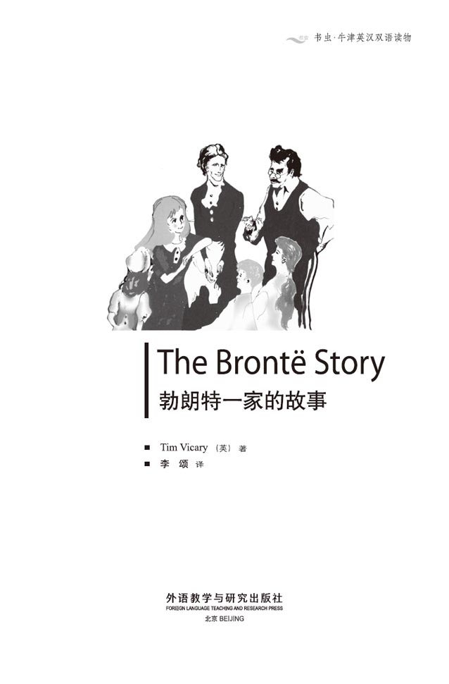
版权页
京权图字01-97-0334
Originally published by Oxford University Press, Great Clarendon Street, Oxford. © 1991
This edition is licensed for sale in the People's Republic of China only and not for export therefrom.
'Oxford' is a registered trademark of Oxford University Press.
只限中华人民共和国境内销售，不包括香港特别行政区、澳门特别行政区及台湾省。不得出口。
图书在版编目（CIP）数据
勃朗特一家的故事 = The Brontı Story/（英）维克瑞（Vicary, T.）著；李颂译．—北京：外语教学与研究出版社，1998.1（2014.12 重印）
（书虫·牛津英汉双语读物）
ISBN 978-7-5600-1419-7
Ⅰ．勃… Ⅱ．①维…②李… Ⅲ．英语—对照读物，文学—英、汉 Ⅳ．H319.4：I
中国版本图书馆CIP数据核字（98）第07736号
出版人： 蔡剑峰
责任编辑：周 晶
出版发行：外语教学与研究出版社
社 址：北京市西三环北路19号（100089）
网 址：http://www.fltrp.com
版 次：1998年9月第1版
书 号：ISBN 978-7-5600-1419-7
* * *
凡侵权、盗版书籍线索，请联系我社法律事务部
举报电话：（010）88817519
电子邮箱：banquan@fltrp.com
法律顾问：立方律师事务所 刘旭东律师
中咨律师事务所 殷 斌律师
目录
简介
简 介
天资到底是什么？它从哪儿来？通常人们认为天资是上帝赋予的，只给那些幸运的人。事实上，我们并不清楚究竟那些人是否算得上幸运。天资似乎并不能使人们幸福，相反会使他们远离人群，因为天资是一种不能共享的东西。
然而勃朗特一家的情形表明，天资被赋予了一个家庭。因为天资，这个家庭的成员远离尘世；离开了家他们就得不到快乐。而在家中，作为一个家庭，他们的天资却得以成长。是谁教会他们写作的？是他们自己！而且几乎没有人比他们写得更出色。
这本书不是他们写的，而是关于他们的故事。这是他们的父亲未曾写却应该写下的：一个关于他们家庭的故事，虽然他只拥有了那么短时间的家庭。
这本书的作者蒂姆·维克瑞从事英语教学工作多年，现在在约克郡生活和工作。
1．Haworth
1
Haworth
There was a cold wind this afternoon, but the sun shone for an hour or two. I walked out on the moors behind the house. The sheep were hiding from the wind under the stone walls, and there were grey clouds over the hills to the west. It is only November, but I could smell snow in the air.
It will be a cold winter, this year of 1855.
My name is Patrick Brontë, and I am seventy-eight years old. I am the rector of the village of Haworth. Haworth is a village of small, grey stone houses on the side of a hill in the north of England, and I live in a house at the top of the hill, next to the church and the graveyard.
I walked through the graveyard to the church this afternoon. All my family except Anne are buried there. The wind had blown some dead leaves through the door into the church, and I watched them dancing in the sunlight near the grave. Soon I shall be in that grave with my wife and children, under the cold grey stone and dancing leaves.
It is dark outside now, and it is very quiet in this house. Charlotte's husband, Mr Nicholls, is reading in his room, and our servant is cooking in the kitchen. Only the three of us live here now. It is very quiet. I can hear the sounds of the wood burning in the fire, and the big clock on the stairs.
There is another sound too — the sound of the wind outside. The wind has many voices. It sings and laughs and shouts to itself all night long. Last night it cried like a little child, and I got out of bed and went to the window to listen.
There was no child, of course. Only the wind and the gravestones, cold in the pale moonlight. But I decided then that I would write the story of my children, today, before it is too late. Charlotte's friend, Mrs Gaskell, is writing a book about her, and perhaps she will want to read my story.
It is a fine story. It began in April 1820, when we came to Haworth for the first time...
There was a strong wind blowing that day too, out of a dark, cloudy sky. We could see snow on the moors. The road to Haworth goes up a hill, and there was ice on the stones of the road. Maria, my wife, was afraid to ride up the hill in the carts.
'We'll walk, children,' she said. 'If one of those horses falls down, there'll be a terrible accident. Come on, let's go and see our new house.'
She was a small woman, my wife, and not very strong. But she carried the baby, Anne, up the hill in her arms. I carried Emily — she was one and a half years old then. The others walked. My two-year-old son, Patrick Branwell, walked with me, and Charlotte, who was nearly four, walked with her mother. The two oldest children — Elizabeth and Maria — ran on in front. They were very excited, and laughed and talked all the way.
The people of Haworth came out to watch us. Some of them helped, but most of them just stood in their doorways and watched. They are very poor people, in this village. I was their new rector.
We had seven carts to carry our furniture up that icy hill, but it was hard work for the horses. When we reached our house, the wind was blowing hard in our faces. My wife hurried inside, and began to light fires.
'Do you like it, my dear?' I asked her that night, when the children were in bed. She looked pale and tired. I thought it was because of the long journey, and the children. Perhaps it was.
She held out her hands to the fire, and said: 'Of course, Patrick. It's a fine house. I do hope it will be a good home for you, and the children.'
I was a little surprised by that. 'And for you, Maria,' I said. 'Don't forget yourself. You are the most important person in the world, to me.'
She smiled then — a lovely smile. 'Thank you, Patrick,' she said. She was a very small woman, and she was often tired because of the children. But when she smiled at me like that, I thought she was the most beautiful woman in England.
A year and a half later, she was dead.
She did not die quickly. She was in bed for seven long months, in awful pain. The doctor came often, and her sister Elizabeth came too, to help. The children were ill, as well. It was a terrible time.
My wife Maria died in September, 1821. She was thirty-eight. It was my job to bury her in the church. Our six young children stood and watched quietly.
Afterwards, we went back to the house. I called them into this room and spoke to them.
I said: 'You must not cry too much, my dears. Your mother is with God now. She is happy. One day you will all die, and if you are good, you will go to God, too.'
'But why?' Maria asked. 'Why did she die now, father? We need her.'
'This world is a hard place, children, and we cannot understand everything that God does. But God loves us, never forget that. Your mother loved you, and perhaps she can see you now. We must all try to work hard, learn as much as possible, and be kind to each other. Will you do that?'
'Yes, father.'
They all looked so sad, I remember, and they listened so carefully. Little Emily said: 'Who will be our mother now?'
'Maria is the oldest, so she will help me. You must all listen to her, and do what she says. And your Aunt Elizabeth is here, too. Perhaps she will stay for a while.'
Elizabeth did stay. She was older than my wife, and she wasn't married. We called her Aunt Branwell. She came from Penzance in Cornwall, a warm, sunny place by the sea in the south-west of England. It is often cold on the moors behind Haworth, and the winds blow all winter. Aunt Branwell hated Haworth, but she stayed here all her life, to help me with her sister's children. She was a good, kind woman.
I was very proud of my little Maria. She was only eight years old, but she worked all day like an adult. She helped the little ones to get washed and dressed; she helped them to play and draw and read. She was like a little mother to them.
She could read very well herself. We always had books and newspapers in the house, and I talked to the children about them every day. I talked to them about adult things: the Duke of Wellington, and the important things that he was doing in London. The children listened carefully, and tried hard to understand. Maria often read to the others from the newspaper, and asked me questions about it. She understood it better than most men.
I was sure my children were very clever. But I did not have time to talk to them all day; I had my work to do. So, in 1824, I sent them to school.
moor n. open, uncultivated land. 荒野。
rector n. priest. 牧师。
accident n. something unexpected. 意外事故。
in front in the foremost. 在……前面。
doorway n. opening into which a door fits. 门口。
bury v. perform the burial service. 举行葬礼。
hate v. have a strong dislike of or for sth./sb. 憎恨。
adult n. a grown person. 成年人。
霍沃思
1 霍沃思
尽管今天下午刮起一阵寒风，太阳还是出来了一两个小时。我漫步在屋后的荒野上，羊群躲在石墙下避风，乌云笼罩着山顶，向西而去。刚刚才11月份，空气中就已经可以嗅到雪的气息了。
今年——1855年的冬天将会很冷。
我叫帕特里克·勃朗特，已经78岁了。我是霍沃思的乡村牧师。霍沃思是英格兰北部一座山边的一个村子，那儿有一些灰色石头砌成的小房子。我住在山顶的一栋房子里，隔壁是教堂和墓地。
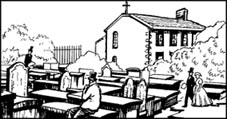
今天下午，我步行穿过墓地去教堂。除了安妮，我的一家都葬在这里。冷风卷起了一些枯叶，把它们从教堂的大门吹了进来，我注视着它们在墓地旁的阳光中飞舞。要不了多久我也会躺在这个墓地中，在这冰冷的灰色石头和纷飞的落叶下，同我的妻子和孩子们长眠在一起。
这时外面黑了下来，整幢房子非常安静。夏洛蒂的丈夫尼科尔斯先生正在自己的房间里看书，我们的用人正在厨房做饭。这儿只有我们三个人，真是太安静了。我能听见木柴在炉火中燃烧的声音和楼梯上大钟的嘀哒声。
还有另一种声音——那就是屋外风的吼叫。风有着各种各样的声音，它总是整宿整宿地笑呀、哭呀、喊呀。而昨夜它呜咽得像个孩子。我下了床，走近窗边侧耳细听。
当然不会有孩子，只有风和苍白月光下冰冷的墓碑。然而我还是决定就在今天，趁还没有太晚，写写我的孩子们的故事。夏洛蒂的朋友盖斯凯尔夫人正在写一部关于夏洛蒂的书，也许她会愿意读读我的故事。
这是一个很好的故事，它始于1820年4月，我们第一次来到霍沃思的时候……
那天，昏暗多云的天空也是一整天都刮着强劲的风。我们能看到旷野上覆盖的雪。去霍沃思的路沿着山坡向上而去，一路上的石头上都结了冰。我的妻子玛丽亚怕坐马车上山。
“我们走上去吧，孩子们，”她说，“只要有一匹马摔倒，都会是一场可怕的灾难。走吧，让我们去看我们的新房子。”
我的妻子个子不高，身体也不好，可她还是抱着小女儿安妮往山上爬。我抱着一岁半的爱米丽，其他人都步行。两岁的儿子帕特里克·布兰韦尔和我走在一起；快四岁的夏洛蒂跟着妈妈；两个最大的孩子，伊丽莎白和小玛丽亚跑在前面。她们非常兴奋，一路上又说又笑。
霍沃思的人们出来看我们，有的过来帮忙，但大多数人只是站在门前观望。他们都是这个村子里的穷人。我是他们的新牧师。
七辆马车帮我们把家具拉上冰封的山顶。对马来说这不是件容易的事。我们到家时，冷风猛吹着脸颊。我妻子急忙跑进屋里生火。
“你喜欢这房子吗，亲爱的？”孩子们都入睡后我问她。她看上去脸色苍白，非常疲倦，我想是长途跋涉和孩子们拖累的缘故。也许是吧。
她把手伸到炉边烤着，说：“当然喜欢，帕特里克。这是幢好房子。我真希望它会是你和孩子们的一个好家。”
她的话让我觉得有点惊讶。“这也是你的家呀，玛丽亚。”我说，“别忘了你自己。对我来说，你是这个世界上最重要的人。”
她听后笑了——多么可爱的微笑。“谢谢你，帕特里克。”她说。她是一个很瘦小的女人，孩子们时常令她疲倦不堪。但是每当她那样对我微笑时，我就觉得她是全英格兰最美的女人。
一年半以后，她死了。
她去得并不快。在极度的痛苦中她在病榻上捱了七个月之久。医生常来看她，她姐姐伊丽莎白也来帮忙。孩子们也病了。那真是段可怕的日子。
我妻子玛丽亚死于1821年9月，享年38岁，是我在教堂为她主持的葬礼，我们的六个孩子站在一旁默默地看着。
然后我们回家了。我把他们叫进房间谈话。
我说：“你们不要太悲伤，亲爱的孩子们。你们的妈妈现在和上帝在一起。她很快乐，有一天你们也都会死，如果你们是好人，也会去上帝那儿的。”
“可是为什么？”小玛丽亚问道，“为什么她现在就死了，爸爸？我们需要她呀。”
“这个世界是个充满苦难的地方，孩子们，我们无法理解上帝所做的每一件事。但是上帝爱我们，永远不要忘记这一点。你们的妈妈爱你们，也许她现在就可以看见你们。我们大家都应努力工作，努力学习更多的知识，并且彼此友爱。你们能做到吗？”
“是的，爸爸。”
我记得他们看上去非常难过，却都那么仔细地听着。小爱米丽说：“现在谁当妈妈呢？”
“玛丽亚最大，她将协助我。你们都得听她的，按她说的去做。你们的伊丽莎白姨妈也在这儿。也许她会住一阵子。”
伊丽莎白真的住下了。她比我妻子年长，一直未婚。我们叫她布兰韦尔姨妈。她来自英格兰西南部康沃尔的一个叫彭赞斯的靠海的地方，那里温暖而且充满阳光。但霍沃思后面的荒野经常很冷，整个冬天都刮着寒风。布兰韦尔姨妈讨厌霍沃思，但她后半生一直住在这儿，帮我照料她妹妹的孩子们。她真是个心地善良的女人。
我为我的小玛丽亚感到非常自豪。她只有八岁，但她像个大人那样整天忙着。她帮弟弟妹妹洗澡、穿衣服；她带他们玩耍、画画、读书。她就是他们的小妈妈。
她自己能读书而且读得很好。我们家里总是有书和报纸，而我每天和孩子们谈论这些书报。我给他们讲大人的事情：惠灵顿公爵及他在伦敦所做的重大事情。孩子们仔细倾听并试着去理解。玛丽亚经常给弟弟妹妹们念报纸，还问我些问题。她理解得比大多数成年人还好。
我知道我的孩子们非常聪明。但我没有时间整天都和他们谈话，我有自己的工作要做。于是在1824年，我把他们送进了学校。
2．Cowan Bridge School
2
Cowan Bridge School
I was born in a small house in Ireland. There were only two rooms in our house, and I had nine brothers and sisters. My parents were very poor. We had no money, and only a small farm. But we did have a church near us, and that church had a school.
That school gave me my one chance of success. I worked very hard there, and when I was sixteen, I became a teacher. Then I went to St John's College, Cambridge, to study some more. I became a curate. When I married, I was able to get a good job and a house for my family. I got all that because I worked so hard at school.
I wanted my children to go to the best school that I could find. Cowan Bridge School was a school for the daughters of churchmen. It belonged to a churchman — Mr Wilson. He was a good man, I thought. I liked the school, and it was not too expensive. So, in July 1824, I took Maria and Elizabeth there. In September, I took Charlotte and, in November, Emily as well. Emily was just six then, and Charlotte was eight.
I remember how quiet the house was that autumn. In the evenings I taught my son, Branwell, and my wife's sister looked after the youngest child, Anne. I often thought about the girls. My eldest, Maria, was a good, clever girl — I thought she must be the best pupil in the school. I waited for her letters, and wondered what new things she was learning.
She did tell me some things in her letters, but not enough. She told me she liked the schoolwork, and I was pleased. But she did not tell me about the food, or the cold, or the unkind teachers. Charlotte told me those things, much later. I know Maria did not tell me that the food was often burnt and uneatable, or that they could not sleep because the beds were too cold. She did not tell me that the poor hungry children had to wash with ice in the mornings, and walk through wet snow to sit for two hours with icy feet in a cold church on Sundays. She did not tell me that many of the children at the school were ill.
You didn't tell me that, did you, Maria? Did you? Or did you try to write something, and stop because you were afraid of the teachers? You were a good, brave child, and I was so proud of you, so pleased because you were at school. I wanted you to learn everything; I didn't want you to be poor like my sisters. God help me, I thought you were happy at Cowan Bridge School!
There were no Christmas holidays at the school, and it was too difficult to travel over the cold, windy hills to visit my little girls. So I sat at home here in Haworth, with Aunt Branwell, my son, and the little girl, Anne. Outside, the wind blew snow over the gravestones, and there was ice on our windows.
On Christmas Day little Anne looked lonely. She asked me about her sisters.
'Don't worry, my dear,' I said. 'They are happy, with the other girls at school. You shall go to Cowan Bridge, too, when you are older.'
I remember how strangely she looked at me then. She was only four, and very pretty. She smiled at me, but her face went very white, and her hands started to shake. I don't know why. I thought she was cold, and I put some more wood on the fire. Then Aunt Branwell read her a story from the Bible, and I forgot about it.
In February a letter came. It was in an adult's handwriting, not Maria's. Dear Mr Brontë, it said. I am afraid I have some bad news for you. Many children in the school have been ill, and your daughter Maria...
My hand began to shake badly, and I dropped the letter on the floor. As I picked it up, I could see only one word — dead... If your daughter Maria does not come home soon, she will be dead.
I went over the hills to bring her back. My Maria was in a small bed in a cold room upstairs, coughing badly. Elizabeth and Charlotte and Emily stood beside her, waiting for me. They looked so sad and ill and frightened. I remember the big eyes in their small white faces. But I did not bring them home then; the school doctor said it was not necessary. So I took Maria home across the cold, windy moors to Haworth. I sat beside her in the coach and held her hand all the way. I remember how cold her hand was in mine. Thin cold fingers, that did not move at all.
It was too late to save her. She lay in bed upstairs for nearly three months, but she was too ill to eat. Her poor face was white, I remember, and it seemed thin and small like a dead child's. Only her eyes looked alive — big dark eyes in a thin white face. 'Don't cry, father,' she said to me once. 'I shall be with mother soon, you know. And with God.'
I buried Maria beside her mother, and a month later I buried Elizabeth there, too. She became ill at school, and a woman from the school brought her home. I brought Charlotte and Emily home two weeks later. They were here when Elizabeth died. Her body lay all night in a wooden box on the table, and her little sisters and brother kissed her before she was buried.
I had wanted so much for these two girls, and now I had nothing. I stood in the church, and looked at the summer flowers I had put on their grave. I remembered how my wife had held the girls in her arms, and how she had smiled at me when we looked at them. 'They have come back to you now, Maria,' I said. 'I am sorry. I am so sorry, my love.'
curate n. person who helps a parish priest. 副牧师。
burnt adj. spoilt by heat. 被烧焦的。
shake v. move from side to side. 摇摆，摇晃。
hold v. keep sth. in hand, arm, etc. 握着，抓住。
wooden adj. made of wood. 木制的。
want... for... need sth. to supply sb. 需要……给某人。
考恩桥学校
2 考恩桥学校
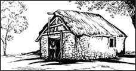
我出生在爱尔兰的一座小房子里。家里只有两个房间，我有九个兄弟姐妹。父母很穷，我们没有钱，只有一个小农场。附近有个教堂，那个教堂有一所学校。
那所学校赋予了我一个成功的机会。我非常努力，16岁时，我成了一名教师，后来我去剑桥的圣约翰学院深造。我成了副牧师。等到我成家的时候，我得到了一份好工作和一座房子。这一切得益于我在学校的努力。
我要我的孩子上我能找到的最好的学校。考恩桥学校是专为牧师的女儿们开办的。它属于一个牧师——威尔逊先生。我认为他是个好人。我喜欢这所学校，而且它也不太贵。于是在1824年7月，我把玛丽亚和伊丽莎白送到了那里。9月份，我又把夏洛蒂送到那儿。11月份又送去了爱米丽。爱米丽当时只有6岁，夏洛蒂8岁。
我记得那年秋天，家里变得非常安静。晚上我教儿子布兰韦尔念书；我妻子的姐姐照料最小的孩子安妮。我时常惦记我的女儿们。我的大女儿玛丽亚是个善良聪明的女孩——我相信她一定是学校中最好的学生。我等着她的来信，想知道她又学到了什么新的东西。
在信中她的确给我讲了一些事，但还不够多。她告诉我她喜欢学校的功课，我很高兴。但她没讲起学校的饮食、寒冷和严厉的教师。夏洛蒂告诉我了那些事情，但那已是很久以后的事了。我知道玛丽亚没有告诉我食物经常烧焦，难以下咽；床铺冰冷得令人无法入睡。她没有告诉我可怜的孩子们经常一大早饿着肚子，却不得不用冰水洗漱，然后踏着积雪去教堂，星期天在冰冷的教堂里坐上两个钟头，双脚冻得冰凉。她也没有告诉我学校有许多孩子都生病了。
玛丽亚，你没有告诉我这些，是吗？或许你试着写可又停了笔，因为你害怕老师知道？你是个善良勇敢的孩子，我那么地以你为荣，为你在学校念书而高兴。我希望你学会所有的东西；我不想你像我的姐妹们那样穷困一生。上帝，帮帮我，我以为你在考恩桥学校是快活的呀！
圣诞节学校也不放假，对我来说，要爬过寒风呼啸的山峦去看我的女儿们太困难了。所以，我和布兰韦尔姨妈、儿子和小女儿安妮待在霍沃思的家中。屋外，寒风把雪卷到墓碑上空，窗户上都结了冰。
圣诞节那天小安妮显得很孤单。她向我问起姐姐们。
“别担心，亲爱的。”我说，“她们和其他孩子在学校里很快活。你长大了也要去考恩桥学校。”
我记得她听了以后那么奇怪地看着我，她只有四岁，非常漂亮。她冲我笑了笑，可是脸却变得非常苍白，双手也开始颤抖起来。我不知道是怎么回事。我以为她冷，就往火里加了些木头。然后布兰韦尔姨妈给她念《圣经》里的一个故事，我就把这事忘了。
2月份时来了一封信，不是玛丽亚写的，而是一个成年人的笔迹。“亲爱的勃朗特先生，”上面写道，“恐怕有个坏消息要通知您。学校里有很多孩子都病了，您的女儿玛丽亚……”
我的手剧烈地哆嗦起来，信纸滑落到地板上。我捡起来，只看见一个字——“死……如果您的女儿玛丽亚不赶快回家的话，她会死的。”
我翻山越岭去接她回家。我的小玛丽亚躺在楼上一间冰冷房间的小床上，剧烈地咳嗽着。伊丽莎白、夏洛蒂和爱米丽站在床边等着我。她们看上去好像病了，又伤心又惊恐不安。我记得她们苍白的小脸上大大的眼睛。但是我没有把她们也接回家；学校的医生说用不着。于是我只带着玛丽亚穿过寒风呼啸的荒野回到霍沃思。一路上我在马车里坐在她身旁，握着她的手。我还记得她的手在我手心里是多么的凉啊。手指又细又凉，一动也不动。
要挽救她的生命还是太晚了。她在楼上的床上躺了近三个月，病得不能吃东西。我记得她那苍白的小脸看上去那么瘦小，像个死孩子一样。只有眼睛看上去还是活生生的——瘦削、苍白的脸上大大的黑眼睛。“别哭，爸爸。”有一次她对我说，“你知道，我很快就要和妈妈在一起了。和上帝在一起。”
我把玛丽亚埋在她妈妈的旁边。一个月以后我又在那里掩埋了伊丽莎白，她在学校生了病，被学校的一个女人送回了家。两周后我把夏洛蒂和爱米丽接了回来。伊丽莎白死时她们都在家。她的尸体在桌上的木棺里停放了一整夜，下葬前她的妹妹们和弟弟亲吻了她。
我曾在这两个女孩子身上寄托了那么多希望，而现在我什么也没有了。我站在教堂里看着我放在她们坟上的夏天的花。我还记得我妻子如何把她们搂在怀里，记得当我们看着她们时，她是如何地向我微笑着。“她们回到你身边了，玛丽亚。”我说，“对不起，真对不起，亲爱的。”
3．The little books
3
The little books
I had four children now — Charlotte, Branwell, Emily and Anne. I did not send them to school again for many years. God's ways are hard to understand, I thought. Perhaps God was not pleased with me; perhaps He wanted Maria and Elizabeth for Himself. I decided to keep the others at home. Aunt Branwell could teach them, and I could help when I had time.
They were clever children, quick at learning. They loved to write and draw and paint, and they talked all day long. And, thank God, they were not ill. In the afternoons, my servant, Tabby, took them for long walks on the moors behind the house. They walked for miles on the hilltops in the strong clean wind, alone with the birds and the sheep. I think it was good for them. They grew stronger, and there was a bright light in their eyes.
I was not the only sad father in Haworth. Many, many children died, and I had to bury them all. The water in Haworth was bad, so many children died from illness. And many more died from accidents; I saw a hundred children die from fire. In my house, I was always very careful. I had no curtains, no carpets, because I was afraid of fire. My children never wore cotton clothes, because they burn so easily.
One day in 1826 I brought a box of toy soldiers home from Leeds. Next morning the children began to play games with them.
'This one is mine!' Charlotte said. 'He's the Duke of Wellington!'
'And this is mine!' said Branwell. 'He's Napoleon Bonaparte!'
The children liked the wooden soldiers and began to tell a story about them. It was a very exciting story, I remember. They read it to me and Aunt Branwell and Tabby, our servant. The next day they invented another story, and then another. And then for several days the children were very quiet, and I wondered what they were doing.
I went upstairs, and opened their bedroom door. Inside, they were all busily writing or drawing on small pieces of paper. The wooden soldiers were in the middle of the room in front of them.
'What are you doing?' I asked.
Emily looked up. 'Oh, father, please go away,' she said. 'We're writing our secret books.'
I suppose I looked sad. 'What? Can't I see them?' I asked.
They all thought for a minute. Then Charlotte said, very seriously: 'You can see some of them, of course, papa. But they aren't easy to read, because it's very small writing. We'll show them to you when we are ready.'
These toy soldiers opened a new world for my children. They showed me some of their stories, but there were hundreds that they kept secret. They all began writing so young — Charlotte, the oldest, was only ten, and Emily was eight. I don't think they ever stopped. Mr Nicholls has all Charlotte's little books now, in a cupboard in his room. Some of them are no more than five or six centimetres high. They are beautifully made, and full of small pictures and tiny writing. There is one on my desk now, but I can't read it, my eyes are too bad.
Charlotte and Branwell wrote about a country called Angria, while Emily and Anne wrote about a land called Gondal. The people in those countries fought battles and fell in love, and wrote letters and poems. My children wrote these poems and letters, and they wrote books about Angria and Gondal. They drew maps of the countries, wrote newspapers about them, and drew pictures of the towns and people in their stories. They invented a new world for themselves.
They wrote many of these stories when I was in bed. I used to read to the family, and pray with them in the evening, and then I usually went to bed at nine o'clock. One night, I remember, I woke up and came down again at ten. There was a noise in my room — this room where I am writing now. I opened the door and saw Charlotte and Branwell with a candle, looking at a picture on my wall.
'What are you doing here?' I asked.
'We're looking at the picture, papa,' Branwell said. 'It's the Duke of Zamorna and the Duke of Northangerland fighting in Glasstown.'
I looked at the picture. It's here now behind me. It's a picture of a story in the Bible, with a town, mountains, and hundreds of people in it. 'What do you mean?' I asked.
'It's one of our stories, papa,' Charlotte said. 'We have to come in here to look at the picture. Then we invent what happens.'
'Tell me, then,' I said. They both looked very excited; their faces were pink, and their eyes were bright in the candlelight. But they looked happy too. I put my candle on the table, and sat down here, where I am sitting now, to listen to their story.
It was a wonderful story. Charlotte's wooden soldier, the Duke of Wellington, had had a son, Arthur, Duke of Zamorna. Branwell's toy soldier, Bonaparte, had become the strong, bad, good-looking Duke of Northangerland. The two Dukes were fighting a terrible battle in a city called Glasstown. There were soldiers who died bravely, and beautiful women who fell in love. I listened until two o'clock in the morning. There was much more, but I have forgotten it now.
But I remember the excitement in my children's faces. Sometimes I thought they could actually see these people, as they talked.
Next day they said no more about it, and I did not ask. It was their own secret world, and they did not let me into it again. But I was pleased they had told me about it once. And sometimes they showed me drawings of places in Angria or Gondal. All my children could draw and paint beautifully. Charlotte used watercolours, and often spent hours painting small pictures. Branwell used oil-paints as well.
paint v. make picture with colour, oil, etc. 画画，涂色。
die from die for the reason of. 死于。
curtain n. piece of cloth hung up at window. 窗帘。
invent v. creat or design. 创作，创造。
cupboard n. set of shelves with doors, used for dishes, clothes, etc. 柜橱，食柜，衣柜。
tiny a. little, small. 微小的。
town n. centre of population. 城镇。
fall in love with sb. 爱上某人。
小书
3 小书
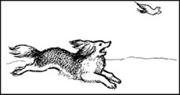
现在我只剩下四个孩子了——夏洛蒂、布兰韦尔、爱米丽和安妮。有好几年我没再把他们送到学校去。我觉得上帝的做法不容易为人所理解。也许上帝对我不高兴，也许他自己想要玛丽亚和伊丽莎白。我决定把其他几个孩子留在家里，布兰韦尔姨妈能教他们，我有空的时候也能帮把手。
他们都是很聪明的孩子，学得很快。他们喜欢写字、素描和画水彩画，一天到晚地交谈。感谢上帝，他们没有生病。下午，我们的用人泰比会带他们到屋后的荒野散步。在清凉的劲风中，他们在山顶上走好几英里，和那些鸟儿、羊儿们待在一起。我觉得这对他们有好处。他们长得结实些了，眼眸中熠熠闪光。
在霍沃思，我并不是唯一一个伤心的父亲，许多孩子都死了，都是由我埋葬的。霍沃思的水很糟糕，很多孩子因此生病死去，还有更多的孩子死于意外。我见过上百个孩子被火烧死。在自己家里我总是非常小心。我不挂窗帘，不铺地毯，因为我害怕火灾。我的孩子从不穿棉布衣服，因为那太容易着火了。
1826年的一天，我从利兹带回一盒玩具兵，第二天一早孩子们就开始拿这些玩具兵做游戏。
“这个是我的！”夏洛蒂说，“他是惠灵顿公爵！”
“这个是我的！”布兰韦尔说，“他是拿破仑·波拿巴！”
孩子们喜欢这些木头士兵，用他们编起了故事。我记得那是个非常令人兴奋的故事。他们把故事念给我、布兰韦尔姨妈和用人泰比听。第二天他们又编出了新的故事，然后又是另一个。后来的几天孩子们变得很安静。我很奇怪，不知道他们究竟在干什么。
我上了楼，推开他们卧室的门。他们正在屋里忙着在小纸片上又写又画。木头士兵就摆在屋子中央他们的面前。
“你们在干什么？”我问道。
爱米丽抬起头说：“哦，爸爸，请走开。我们正在写书，这是我们的秘密。”
我想我看起来有点儿难过。“怎么，我不能看看吗？”我问。
他们想了一会儿。然后夏洛蒂非常严肃地说：“当然，爸爸，你可以看一部分。但它们不太好读，因为字太小了。等我们写完了就给你看。”
这些玩具兵为我的孩子们打开了一个新的世界。他们给我看了一些故事，可还有上百个故事对我保着密。他们那么小就开始写作了——最年长的夏洛蒂也才10岁，爱米丽8岁。自此以后他们就从未停止过写作。尼科尔斯先生现在把夏洛蒂的全部小书收藏在他房间的一个柜橱里。有几本差不多五六公分厚。它们制作精美，里面尽是小画和纤细的手写笔迹。还有一本现在就在我的书桌上，可是我读不了，我的眼神太差了。
夏洛蒂和布兰韦尔写了一个叫安哥利亚的国家。爱米丽和安妮写了一个叫哥恩达尔的地方。那些国家的人们打仗、恋爱，还写信和诗歌。孩子们写这些诗和信，还描绘了安哥利亚和哥恩达尔这两个国家。他们画了地图，编了他们的报纸，还画了故事中的城镇及人。他们为自己创造了一个新世界。
我睡觉的时候他们就写很多这样的故事。我习惯念书给大家听，晚上和他们一起祷告，然后通常在9点钟时上床睡觉。记得一天夜里，我醒来，10点钟又下楼去。在我现在写作的房间里听到了一点儿声音。我开门看见夏洛蒂和布兰韦尔举着一支蜡烛，正在看我墙上的一幅画。
“你们在这儿干什么？”我问。
“我们在看画呢，爸爸。”布兰韦尔说道，“这是扎摩那公爵和北安哥兰公爵的玻璃城之战。”
我看着那幅画，它现在就在我身后。它描绘的是《圣经》里的一个故事，有城镇、山峦和几百个人。“你们是什么意思？”我问他们。
“这是我们的一个故事，爸爸。”夏洛蒂说，“我们得来这儿看看它，这样才能把故事编出来。”
“那么讲给我听听。”我说。他们看上去很兴奋，小脸红扑扑的，眼睛在烛光下闪闪发亮。看样子他们也很开心。我把手中的蜡烛放到桌上，坐了下来——就是我现在坐的地方——听他们讲故事。
那真是个奇妙的故事。夏洛蒂的木头兵是惠灵顿公爵，他有个儿子叫阿瑟，也就是扎摩那公爵。布兰韦尔的木头兵波拿巴成了一个强壮、邪恶而又英俊的北安哥兰公爵。两个公爵在一个叫玻璃城的地方进行了一场激烈的战斗，士兵们英勇地死去，美丽的女人们堕入爱河。我一直听到凌晨两点。还有很多情节我现在已经忘记了。
但我还记得孩子们脸上兴奋的表情。有时我觉得，当他们讲述时，他们真的能看到那些人物。
第二天他们不再提这件事了，我也没有问。那是他们自己的秘密世界，不让我再进入。但我很高兴他们毕竟还是给我讲了一次。有时他们还给我看关于安哥利亚和哥恩达尔的画。我的孩子们都画得很棒。夏洛蒂经常花几小时用水彩来画这些小画。布兰韦尔也用油画颜料画画。
4．Growing up
4
Growing up
When Branwell was fourteen or fifteen, he did a lot of oil-paintings. He painted people in the village, and it was easy to recognize the faces in the pictures. Later, he did a fine painting of his three sisters. I was very proud of him. We all decided he would become a famous artist.
Charlotte went to school again when she was fifteen. It was a much better school — Miss Wooler's school at Roe Head. I don' t think Charlotte liked school, but she wanted to be a teacher — a governess — so she worked hard. I taught Branwell at home, and Aunt Branwell taught Emily and Anne. The girls and Branwell were learning to play the piano, and Branwell played the music in church.
Emily and Anne had dogs, and they used to take them for walks on the moors. Anne's dog was called Flossy, and Emily had a big strong one called Keeper. Keeper went everywhere with her — I think Emily loved that dog more than any person. Emily was sometimes a difficult child. She was very shy, and did not often speak to anyone outside the family. When she was older, I sent her to school with Charlotte, but she hated it, so I brought her home and sent Anne instead.
Branwell was not shy. He could talk to anyone for hours. Everyone in Haworth liked him. I remember the day in 1835 when Branwell went to London. He was eighteen years old, and he was going to the Royal Academy in London to learn to be an artist. He walked down the hill in Haworth with a bag of his best paintings on his back, and everyone in the village came out to see him go. That was a great day for me.
Something terrible happened in London, but I don't know what it was. Branwell came back two weeks later, his face white, his clothes dirty. I don't know where he went or what happened in London. He refused to tell me. He just sat upstairs, alone in his room for hours.
Later, I paid for a room in Bradford for him to work in. He could paint pictures of famous people there, I thought. It was easy work for him. But he couldn't do it. He spent all my money, and came home again after a while.
This was a sad time for me. My eyes were very bad, and I had to pay a young curate to help me with my work for the church. My old servant, Tabby, broke her leg and was very ill. And then one day I got a letter from Miss Wooler's school. My curate read it to me.
Dear Mr Brontë, the letter said. I am afraid that your daughter Anne is very ill, and...
I don't think I ever moved so fast in all my life. Six hours later, I was at Roe Head. The next day Anne and Charlotte were home. Anne was still alive, thank God! A month later she was well again. Thank God.
All my children were safe at home.
I was happy to have them here. They were so clever, and kind, and they loved each other so much. But I was an old man with bad eyes, and Aunt Branwell and I had very little money. My children had to find work somewhere, in order to live.
But what sort of work could they do?
oil-painting n. 油画。
recognize v. know sb./sth. again that one has seen, or heard. 认出；认识。
artist n. person with skill, with one of fine arts. 艺术家。
长大
4 长大
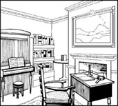
布兰韦尔长到十四五岁时已经画了大量的油画。他画村子里的人，从画面上很容易认出那些人的面孔。后来他为他的三个姐妹精心地画了一幅画。我为他感到非常自豪，我们都认为他会成为一个有名的艺术家。
夏洛蒂15岁时又去了学校。那所学校要好得多——伍勒小姐在罗·海德的学校。我觉得夏洛蒂不喜欢学校，但她想成为一名教师——家庭教师，为此她努力学习。我在家里教布兰韦尔，布兰韦尔姨妈教爱米丽和安妮。他们也学弹钢琴，布兰韦尔还在教堂演奏。
爱米丽和安妮养了几条狗，她们常常带着狗在荒野上散步。安妮的狗叫“福劳赛”，爱米丽的大狗叫“管家”。“管家”到哪儿都跟着她——我猜爱米丽爱狗超过了爱其他人。爱米丽有时是个很难相处的孩子，她非常害羞，不爱与家庭以外的人讲话。她长大点后我送她去学校，和夏洛蒂在一起。可她不喜欢学校，于是我又把她接回来，而把安妮送去了。
布兰韦尔可不害羞。他可以和任何人谈上几个小时。霍沃思的每个人都喜欢他。记得1835年的一天，布兰韦尔要去伦敦。他18岁了，要到伦敦皇家学院学艺术。他从霍沃思走下山去，背上的包里装着他最好的画，村里的人都出来为他送行。那一天真是我的好日子。
在伦敦发生了一些可怕的事情，但是我也不知道究竟是怎么回事。两星期后布兰韦尔回来了，脸色苍白，衣物肮脏。我不知道他去了伦敦的什么地方，也不知道出了什么事，他拒绝跟我讲。他只是一个人坐在楼上的房间里，一坐就是几个小时。
后来我在布拉德福德为他租了间画室，我想他在那儿可以为大人物们画像。那种工作对他来说是轻而易举的，但他却做不到。过了一阵，他把钱花光后又回家了。
这一段时间我的境况很糟糕。我的视力很差，得付钱请一名年轻的副牧师协助教堂的工作。我的老用人泰比跌断了腿，伤得很重。一天，我收到伍勒小姐学校的一封信，我的副牧师把信念给我听。
“亲爱的勃朗特先生，”信中写道，“您的女儿安妮恐怕病得很重，而且……”
我觉得自己一生中从未行动得如此迅速，六个小时后我已到了罗·海德，第二天安妮和夏洛蒂就回到了家里。感谢上帝，安妮还活着！一个月后她痊愈了。真得感谢上帝！
我的孩子们在家里很安全。
我很高兴让他们留在这儿。他们是那么聪明、善良，而且彼此十分友爱。但我已是个视力糟糕透顶的老人了，布兰韦尔姨妈和我的钱少得可怜。我的孩子们为了生存，就必须去什么地方找个工作。
可是他们能干什么呢？
5．Looking for work
5
Looking for work
I do not remember everything they did.
Charlotte and Anne worked as governesses for some months, teaching rich children in big houses, and Branwell got a job like that too, for a while. But they didn't like their work. At home my children were full of talk and laughter, but away from home they were shy, quiet, unhappy.
They wrote a lot of letters in their search for work — sometimes to famous people. Branwell wanted to be a writer, so he wrote to writers; but not many of them wrote back. He began to look pale and sad in those days, and he was often in the village pub, drinking and talking to the people there. Then he got a job selling tickets on the railways, and left home.
The girls had an idea. I remember the day when they told me about it. Charlotte and Anne were at home on holiday, and we were all in the sitting-room after dinner one evening. Anne was playing the piano, and singing quietly to herself. She was the prettiest of the three girls, I suppose. She had long wavy brown hair, and a gentle, kind face. Emily sat on the floor beside her, stroking the ears of her dog, Keeper. Charlotte sat opposite me on the sofa, like a little child with a serious, thoughtful face. She was the smallest; her feet were no bigger than my hands.
She looked at me carefully. 'Papa,' she said. 'We want to start a school.'
'Really, my dear? Where?'
'Here.'
'But Charlotte, my dear, we have no room. This house is full already.'
'Oh, but we could change the house, papa. We could build a schoolroom.'
'Well, yes, I suppose so,' I said. 'But — why do you want to do this? Isn't it better to work as governesses, in some big fine house?'
'Oh no, papa!' All three girls spoke at once. Anne had stopped playing, and Emily looked very angry and frightening. I could see they had thought hard about this.
Charlotte said: 'The life of a governess is terrible, papa! A governess has no time of her own, no friends, no one to talk to, and if she gets angry with the children, they just run to their mother. I couldn't possibly be a governess all my life!'
'It's true, papa,' Anne said. 'It's an awful life. We're so lonely away from each other. Why can't we have a school, and all live here? Then we can take care of you and Aunt Branwell when you get old.'
I looked at Emily. Her eyes were shining; I could see that the idea was important to her too.
'But why will people send their children here?' I asked. 'Haworth is not a big town, or a beautiful place. How will you find children to teach?'
'We have thought of that too, papa,' Charlotte said. 'We must learn more, and become better teachers. I have spoken to Aunt Branwell, and she will give us the money, if you agree. Emily and I want to go to Belgium, to learn French. If we can speak French well, then parents will send their children to us to learn that.'
'Emily will go?' I said. I looked at her. Emily had only been away from home twice, and each time she had been very unhappy. But now she looked excited.
'Yes, papa,' she said. 'I will go. Charlotte is right — we must do something. And this will help us to stay together.'
'And Anne?'
'I will stay as a governess with the Robinson family,' Anne said sadly. 'There's not enough money for us all to go, and... the Robinsons are not so very bad.'
It was always like that. Anne was a gentle girl; she did not fight as hard as the others. Perhaps her life was easier because of that. I don't know.
But I thought it was a wonderful idea. I wrote to Belgium, and found them places in a school in Brussels, which was owned by a Monsieur Héger. I agreed to take the girls there, and for a month I wrote down French words in a little pocket book, to help me on the journey. Then, one afternoon in 1824, we caught the train to London.
I had not been to London for over twenty years, and my daughters had never been there. We stayed for three days, and then we took the night boat to Belgium, and arrived at a tall, fine school building in the centre of Brussels.
Héger himself was a very polite, friendly man — very kind. He did not always understand my French, but he showed me round the school, and talked a lot, very fast. I smiled, and tried to answer.
The two girls were very excited when I left them. As I came home on the boat, I thought: 'This is a good thing, a fine thing, perhaps. My daughters will start a good school, and Haworth will become famous. I hope Branwell can make a success of his life, too. Then my wife Maria will be pleased with us all.'
laughter n. laughing, making sounds showing joy. 大笑，笑声。
stroke v. pass hands along a surface again and again. 抚摸。
start v. make a beginning, open. 开创，创办。
be away from go or be at distance from. 远离，离开。
Monsieur Mr., Sir. （法语）先生。
polite adj. showing possession of good manners, refined. 有礼貌的，文雅的。
找工作
5 找工作
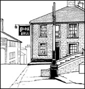
我已记不清他们做过的每一件事情了。
夏洛蒂和安妮做过几个月的家庭教师，教住在大房子里的有钱人家的孩子们。布兰韦尔也暂时找了个类似的工作，但他们都不喜欢这种工作。在家里我的孩子们谈笑风生，可离开家后他们就变得害羞、沉默、很不开心。
他们写了许多求职信——有时是写给大人物的。布兰韦尔想当作家，他就给作家写信，却很少有人回信。那些日子他变得伤心疲倦，经常在乡村酒吧里和人喝酒、闲聊。后来他找到一份在火车站卖票的工作，就离开了家。
女儿们另有想法。我还记得她们把这个想法告诉我的那天。夏洛蒂和安妮回家休假，一天晚饭后我们都坐在客厅里，安妮一边弹着钢琴，一边轻轻地唱着歌。我觉得她是三个女儿中最美的，有一头鬈曲的褐色长发，还有着一张温柔善良的脸。爱米丽坐在她旁边的地板上，抚摸着她那只叫“管家”的狗的耳朵。夏洛蒂坐在我对面的沙发上，看上去像个孩子，却又带着深思熟虑的表情。她个子最小，脚还没有我的手大。
她端详着我，说：“爸爸，我们想开办一所学校。”
“真的，亲爱的？在哪儿？”
“就在这儿。”
“可是夏洛蒂，亲爱的，我们没有地方。这栋房子已经很满了。”
“哦，但我们可以把房子改造一下，爸爸。我们可以盖一间教室。”
“嗯，是啊，我觉得行。”我说，“不过——为什么你想干这个呢？在别人家的大房子里做家庭教师不是更好吗？”
“噢，不，爸爸！”三个女儿一起对我说。安妮停下来，不弹琴了，爱米丽看上去很生气，样子非常吓人。我看得出她们已经好好地想过了。
夏洛蒂说：“当家庭教师的生活太可怕了，爸爸！一个家庭教师没有属于自己的时间，没有朋友，没有说话的人。如果对孩子生气，他们就会立刻跑到自己母亲那里去。我不可能一辈子都干这个！”
“真的，爸爸。”安妮说，“那种生活很可怕。我们不得不分开，都很孤单。为什么我们不能有所自己的学校，就住在这儿呢？这样等您和布兰韦尔姨妈老了我们就可以照顾你们了。”
我看着爱米丽，她的眼睛熠熠发光，看得出这主意对她也很重要。
“但是人们为什么要把孩子送到这儿来呢？”我问，“霍沃思既非大城市，又不是风景区。你们怎么找到孩子来教呢？”
“我们也已经想到这一点了，爸爸。”夏洛蒂说，“我们必须多学一些，成为更好的教师。我和布兰韦尔姨妈谈过了，如果您同意，她会给我们钱的。爱米丽和我想去比利时学法语。如果我们能讲流利的法语，那些父母就会把孩子送来学法语。”
“爱米丽会去吗？”我一边问，一边看着她。爱米丽只离开过家两次，每次她都很不开心。但这回她看上去却相当兴奋。
“是的，爸爸。”她说，“我要去。夏洛蒂是对的——我们必须做些事情，这还能使我们待在一起。”
“那安妮呢？”
“我还在鲁滨逊家里当家庭教师，”安妮难过地说，“我们的钱不够大家都去的，况且……鲁滨逊家的人也没那么坏。”
事情总是那样。安妮是个温柔的孩子，她不像别人那样努力地去争取。或许正是如此，她的生活倒更轻松些。我不知是否如此。
不过我认为这是个好主意。我写信去比利时，在布鲁塞尔的一所学校为他们找到了地方。那所学校是埃热先生的。我同意送她们去那儿，我花了一个月的时间在小笔记本上记下了许多法语单词，以备旅途之需。然后，1842年的一个下午，我们坐上了开往伦敦的火车。
我已有二十多年没去伦敦了，女儿们还从来没去过。我们在伦敦住了三天，然后搭夜班船去比利时，最后到达布鲁塞尔市中心的一座高大美观的学校大楼前。
埃热本人是一个很有礼貌、很友好的人——非常和气。他并不大听得懂我的法语，但还是带着我在学校转了一圈，他讲了许多话，速度快极了。我微笑着，努力有所应答。
当我离开时两个孩子非常兴奋。坐在回家的船上，我心想：“这也许是件好事，一件妙事。我的女儿们将开办一所好学校，霍沃思也将因此而出名。我希望布兰韦尔的生活也能获得成功，那样我妻子玛丽亚会为我们都感到高兴的。”
6．Monsieur Héger and Mrs Robinson
6
Monsieur Héger and Mrs Robinson
At first everything went well. Monsieur Héger wrote to me often. He was pleased with my daughters, he said; they were good pupils. But life at home in Haworth was hard. My curate died, and Aunt Branwell became very ill. Emily and Charlotte came home to see her, but she was dead before they arrived.
She was a good woman, Elizabeth Branwell. She kept my home for more than twenty years, and she taught my daughters everything she knew. But she never liked Haworth, I am sure of that. She said it was a cold, miserable place. I hope that God has found somewhere warm and comfortable for her now.
But how could I live without her? My eyes were now very bad, and I could not see to read. And our servant Tabby was older than I was. Anne could not help me — she was a governess for the Robinson family, and now Branwell had a job there too, teaching their young son. So Charlotte went back to Brussels alone, this time as a teacher in Monsieur Héger's school. Emily stayed at home to cook and clean for me. She did not like Brussels, she said. She was happy to do the housework, and live at home with Tabby and me.
She was a strange, quiet girl, Emily. She was the tallest of the girls, and in some ways she was as strong as a man. She loved to walk by herself on the wild lonely moors, with her dog Keeper running by her side. Sometimes I saw her there, singing or talking quietly to herself, and I thought perhaps she could see the people in her secret world of Gondal, and was talking to them. I know that she spent a lot of time writing alone in her room; and when Anne was at home, she and Emily often talked and wrote about the world of Gondal together.
There were sometimes dangerous people near Haworth, so I always had a gun in the house. Before my eyes were bad, I taught Emily to shoot — she loved that. Sometimes I used to practise shooting in the garden while she was making bread in the kitchen. I shot first, then I called Emily. She came out, cleaned her hands, picked up the gun, shot, and went back in to finish the bread. She was much better at shooting than I was.
But by 1844 my eyes were too bad for shooting. Emily cooked, cleaned the house, played the piano. And almost every day she went for long walks on the moors with her dog, Keeper.
She loved that dog, but she could be very hard with him, too. We did not let him go upstairs, but one day Tabby found him on my bed. Emily was very angry; her face was white and hard. Keeper was a big, strong dog, but she pulled him downstairs and hit him again and again until the dog was nearly blind. Then she gently washed his cuts herself. He never went upstairs again.
Charlotte was another year in Brussels. When she came home, she was quiet and sad. Sometimes she wrote long letters in French to Monsieur Héger, but no letters came from him. But this was a time of hope, too. The girls wrote advertisements for their new school, and sent them to newspapers, and to everybody they knew. It was exciting — they were good advertisements, and we waited for the first children to come.
We waited a long time, and Charlotte wrote more advertisements.
No children came.
Every day Charlotte and Emily waited for a letter from the postman, or for a parent to come to see them. Every day they became more miserable.
Anne left her job with the Robinsons and came home to Haworth. A month later Branwell also came home, for a holiday.
And then one morning, early, there was a knock on the door. Charlotte ran to open it. But it was not a parent — it was a letter for her brother Branwell. He went upstairs with it, smiling.
A few minutes later there was a terrible scream. We ran upstairs to Branwell's room. He lay on his bed, screaming, with a white face and wild dark eyes. The letter was in his hand.
'Branwell! What is it? What's the matter?' I asked.
He tore his hair with his hands. 'I'm ill,' he said. 'I'm cold — Oh, what does it matter? She doesn't care... I can't see her... Oh, it's all finished now, finished for ever! I'll die without her!'
'Here, Branwell, drink this.' Emily brought him a cup of hot milk, but his hand was shaking and he nearly dropped it.
Charlotte put her hand on his head. 'He's hot, papa, he's burning,' she said. 'You must go to bed at once, Branwell.'
He went to bed, and he lay there, sometimes sleeping, sometimes shouting and crying. I tried to talk to him, but I couldn't understand what he said. Then, later, Anne explained.
She told us a terrible story. I was so angry! I nearly broke a chair with my hands as I listened. My son Branwell, Anne said, was in love with Mrs Robinson, the rich mother of his pupil. For months this lady had spoken kindly to Branwell, walked with him in the garden, talked to him alone in the evenings. He thought she would marry him when her husband died. And then there were other things, that Anne did not want to speak about.
The letter was from Mr Robinson. He was often ill, Anne told us, but his children knew about Branwell and their mother, and the servants knew too, I think. Perhaps Mr Robinson had learnt something from them, or perhaps that woman (I cannot call her a wife) had told him everything. Only one thing was certain — in his letter Mr Robinson had ordered Branwell never to return to his house or to speak to any of his family again.
My face was hot and my hands were shaking. I tried to talk to Branwell about it, but it was impossible.
'I love her, papa!' he shouted. 'You don't understand — how can you? You've never seen her!'
'I don't want to see her, my son,' I said. 'I understand that she is a bad, evil woman. I hope that God will punish her and...'
'Don't say that, papa!' he screamed. 'You are talking about the woman I love! She will call me back! I will see her again!'
'I hope you never see her again, my son,' I said. 'You must forget her. Branwell, listen to me...'
But he did not listen. He ran out of the house. He did not come back until the evening, and then he was drunk. He did not listen that day, or the next day, or any day. He began to drink laudanum as well. I thought he would kill himself.
So I think Charlotte was pleased that no parents came. No school could have a man like Branwell in it.
go well work well. 进行得顺利。
miserable adj. not comfortable, suffering from pain, hunger, etc. 悲惨的，可怕的。
shoot v. aim and fire with gun. 射击。
advertisement n. make known to people by means of painting, picture, notice on TV, newspaper, etc. 广告。
scream n. loud cry of noise. 大叫，尖叫。
certain adj. sure. 肯定的。
evil adj. bad, sinful. 坏的，有罪的。
punish v. cause suffering or discomfort for wrong doing. 惩罚。
laudanum n. 鸦片。
埃热先生和鲁滨逊太太
6 埃热先生和鲁滨逊太太
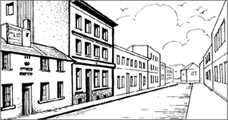
起先每件事都进展顺利，埃热先生时常给我写信，他说他对我的女儿们很满意，她们都是好学生，可是在霍沃思，家里的生活变得艰难了。我的副牧师死了，布兰韦尔姨妈病得很重。爱米丽和夏洛蒂赶回来看她，可她还是在她们到家之前就去世了。
伊丽莎白·布兰韦尔是个好女人，她料理我们家二十多年，她尽自己所知教育我的女儿们。但我肯定她从未喜欢过霍沃思。她说这地方又寒冷又悲惨。我希望上帝现在为她准备了一个温暖而舒适的地方。
但是没有她我还怎么过日子？我的视力现在糟糕透顶，已经无法看书了。而我们的老用人泰比比我岁数还大。安妮也帮不上忙——她是鲁滨逊家的家庭教师，现在布兰韦尔也在那儿教他们的小儿子。所以夏洛蒂只好一个人回布鲁塞尔，这回她成了埃热先生学校的老师。爱米丽留在家里为我们做饭和打扫房子。她说她不喜欢布鲁塞尔。她喜欢做家务，喜欢和泰比及我一起在家里生活。
爱米丽是个奇怪而安静的姑娘。几个女儿中数她个子最高，某些方面她像个男人一样坚强。她喜欢独自在荒野中漫步，“管家”总跟在她旁边跑着，有时我看见她在那里轻轻地给自己唱歌，要么就自言自语。我觉得她或许能看见秘密的哥恩达尔世界中的人物，并和他们交谈。我知道她花了大量的时间在房间里一个人写作。当安妮在家时，她俩经常一起谈论并写哥恩达尔世界的故事。
有时霍沃思附近会出现一些危险人物，所以我家中常备着枪。在我视力变坏以前，我曾教爱米丽射击——她喜欢射击。有时我在花园里练枪法，她在厨房做面包，我先打，然后叫爱米丽，她出来擦干净手，拿起枪，扣一下扳机，然后又回厨房接着做面包。她打得可比我好多了。
但是到了1844年，我的视力糟得不能再射击了。爱米丽做饭、打扫屋子、弹钢琴，几乎每天都和“管家”在荒野中走很远的路。
她爱那条狗，但对它也很严厉。我们不让它上楼，可是有一天泰比发现它待在我的床上。爱米丽非常生气，脸变得苍白、阴沉。“管家”是一条又大又壮的狗，但是她一把就将它拖下楼，把它揍来揍去，几乎打瞎了。然后她自己又轻轻地给它洗伤。从此它再也没有上过楼。
夏洛蒂在布鲁塞尔又待了一年。再回家时她变得沉默、忧伤。有时她用法语给埃热先生写长长的信，但没有收到回信。不过这段时间也充满着希望，女儿们为她们的新学校写广告，寄给报社，寄给她们认识的所有人。真令人兴奋——那是些出色的广告，我们期待着第一批学生的到来。
我们等了很久，同时夏洛蒂又写了更多的广告。
可是没有孩子来。
每天夏洛蒂和爱米丽都等着邮差送信，期待着某一对父母来找她们。一天又一天她们都变得越发伤心。
安妮辞去了她在鲁滨逊家的工作，回到霍沃思的家中。一个月后，布兰韦尔也回家来度假。
一天清早，一阵敲门声响了起来。夏洛蒂跑过去开门，但那不是某一对父母——而是一封给她弟弟布兰韦尔的信。他微笑着拿上楼去了。
几分钟后传来一声可怕的尖叫。我们跑上楼，冲进布兰韦尔的房间。他躺在床上，尖叫着，脸色苍白，深色眼睛流露出狂野的神色。那封信紧紧地攥在他手里。
“布兰韦尔！那是什么信？你怎么了？”我问。
他双手撕扯着头发。“我生病了。”他说，“我觉得冷——噢，那又怎么样，她并不在乎……我见不到她了……噢，现在全完了，永远完了！没有她我会死的！”
“来吧，布兰韦尔，把这个喝了。”爱米丽端来一杯热牛奶，可他双手颤抖得几乎拿不住杯子。
夏洛蒂用手摸摸他的头。“好烫呀，爸爸。他在发烧。”她说，“你必须立即躺下，布兰韦尔。”
他上了床，躺在那儿，一会儿睡着了，但一会儿又大喊大叫。我试着和他说话，却弄不明白他在说什么。后来安妮解释了一切。
她告诉了我们一个可怕的故事。我非常生气！听的时候我差点儿把一把椅子捏碎了。我的儿子布兰韦尔，安妮说，爱上了鲁滨逊太太，就是他那学生的有钱的母亲。有几个月，这个女人对布兰韦尔甜言蜜语，和他在花园散步，晚上单独和他谈话。他觉得等她丈夫死后，她就会嫁给他。后来又发生了别的事情，安妮不想说了。
信是鲁滨逊先生写的。他时常生病，安妮说。可他的孩子们知道布兰韦尔和他们母亲的事情。我猜想可能连用人也知道。也许鲁滨逊先生从他俩那儿看出了什么，或许那个女人（我无法称她为一个妻子）已经把一切都告诉了他。只有一件事是肯定的——在信中鲁滨逊先生命令布兰韦尔永远不得踏进他的家门，也不能再与他的家人讲话。
我的脸在发烧，双手颤抖。我想和布兰韦尔谈谈这事，但不可能。
“我爱她，爸爸！”他喊道，“你不懂——你怎么能懂呢？你又从未见过她！”
“我不想见她，儿子。”我说，“我只懂得她是个坏女人，一个邪恶的女人。我希望上帝惩罚她并且……”
“别说了，爸爸！”他声嘶力竭地喊道，“你在说一个我爱的女人！她会叫我回去的！我会再见到她的。”
“我希望你不要再见她了，儿子。”我说，“你必须忘了她。布兰韦尔，听我说……”
但他没有听，他从房间里冲了出去，直到晚上才回来，已是醉醺醺的了。那天他没有听我说完，第二天也没有，以后再也没有。他还开始喝鸦片酊，我觉得他会害死自己的。
所以我觉得夏洛蒂会高兴没有学生父母来。没有哪所学校能容得下布兰韦尔这样的人。
7．Currer, Ellis, and Acton Bell
7
Currer, Ellis, and Acton Bell
At about this time, in 1845, I was almost blind. I had a new curate to do my work — Arthur Nicholls, a young man of twenty-eight. He came from Northern Ireland like myself. He was a good, hard worker. I spoke in the church on Sundays, but Arthur Nicholls did the rest of my work.
Branwell became worse and worse. Mr Robinson died in 1846, but Mrs Robinson didn't marry Branwell — oh no! She was a cold wicked woman. She sent my son Branwell away, and later married a rich old man. And so Branwell spent more and more time drinking, and taking laudanum, and walking alone on the moors.
When you are blind, you listen to things very carefully. I used to sit alone in my room and listen to the sounds of the wind outside the house. The wind talks and whispers and sings — it has many voices. I listened to the sounds of the clock on the stairs, and the wood in the fire, and the footsteps and voices of the girls walking round the house. They talked a lot to each other, and sometimes I could hear what they said, even when they were in another room.
Anne had had a poem published in a magazine, and one day I heard a conversation between Charlotte and Emily. Charlotte had found something that Emily had written, and was talking to her about it.
'But they're wonderful, Emily,' Charlotte said. 'They're much better than mine or Anne's.'
'They're not for people to read,' Emily said. 'They're part of the Gondal story. Nobody would understand them, except me and Anne.'
I realized that they were talking about some poems of Emily's. I knew that Emily and Anne wrote a lot about the country of Gondal, but I didn't know much about it. Emily kept all her papers locked in her desk.
Charlotte was arguing with her. 'Emily, listen to me! These are fine poems. I think we should put some of them in a book, together with mine and Anne's, and try to publish it. People should read them!'
'No!' Emily shouted. Then her dog Keeper began to bark, and I didn't hear any more. But I think they talked about this again several times. I often heard voices arguing, and usually they never argued about their writing.
I wanted to tell them not to do it. I had published several small books myself, but I always lost money. I had to pay the publisher to print the books, and not many people bought them. It's an easy way to lose money. But I was too ill, so I said nothing.
I learnt, many years later, that they paid over ￡30 to have a book of poems printed, and that it sold two copies. I am not surprised that they didn't tell me about it; we had very little money in our house.
I began to feel that there was something wrong with my head, as well as my eyes. Several times the postman brought an old packet to our house, which was addressed to a man called Currer Bell. I told him that no Currer Bell lived in Haworth, and sent him away. But then, a month or two later, he came back again, with the same old packet.
In the summer of 1846 Charlotte took me to see an eye doctor in Manchester. We stayed in rooms in the town. The doctor decided to operate on my eyes, and the next morning we got up early. I was afraid. Could I hold my head still while the doctor cut into my eyes with a knife? Perhaps the pain would be too terrible. Perhaps I would move, or stand up, or...
Charlotte held my hand. As we left our rooms, we met a postman.
'Good morning, Miss,' he said. 'There's packet here for Currer Bell.'
'Oh... thank you.' Charlotte sounded sad, but she took the packet, and put it in her room. She did not open it. Then we walked to the eye doctor's.
The pain was terrible, but it was over in fifteen minutes, and I didn't move. Afterwards, I had to lie on a bed in a dark room. We couldn't go home for a month. A nurse came sometimes, but Charlotte stayed with me all day.
I asked her once about the packet. She said: 'Oh, it's for a friend of mine, papa. It had a letter for me in it. I have posted it away again now.'
I didn't understand, but I didn't ask again. I lay quietly on my bed most of the day, and Charlotte sat in the next room writing. She wrote very fast, for many hours, and never put her pen down once. She seemed quiet, but strangely happy.
I was happy too. The doctor had helped; I could see again. It was wonderful — the colours, the shapes of everything were beautiful. When we came back to Haworth, I could see everything clearly at last — our home, the church, the graveyard, the moors, the faces of my Emily and Anne!
And Branwell.
Branwell's face looked terrible. White, thin, with big dark eyes and untidy hair. His clothes were dirty, he smelt, his hands shook. All the time he was either shouting or crying. And always, every day, he asked me for money.
I let him sleep in my room at night, and he kept me awake for hours talking about Mrs Robinson. I remembered his paintings, his stories, his happy childish laughter. My fine, clever son had become a drunken animal.
The winter of 1846 was terribly cold. The wind blew snow around the house and over the gravestones. A lot of children died in the village. Anne was ill, Branwell was worse. We lit fires in all the rooms, but there was ice inside the windows in the mornings. I spent most of my time with Branwell, so didn't think very much about the girls.
And then, one afternoon, Charlotte came into my room. I was sitting here, in this same chair, beside the fire. She had a book in her hand, and that strange, happy look on her face.
'Papa,' she said. 'I've been writing a book.'
I smiled. 'Have you, my dear?' I thought she had written another little book about Angria.
'Yes, and I want you to read it.'
'Oh, I'm afraid it will hurt my eyes too much.' My eyes were much better, but the tiny writing in the Angria books was too small for me.
'Oh no,' she said. 'It's not in my handwriting; it is printed.' She held out the book in her hand.
'My dear! Think how much it will cost! You will almost certainly lose money, because no one will buy it! No one knows your name!'
'I don't think so, father. I didn't pay to get it printed, you know. The publishers paid me. Listen to what people say about it in these magazines.'
She sat down, and read to me from some of the most famous magazines in England. There were long articles in them, about a book called Jane Eyre, by Currer Bell. They were kind articles; most of the magazine writers liked the book.
'This Currer Bell, then,' I asked. 'Is it you?'
Charlotte laughed. 'Yes, papa. It's a man's name, with the same first letters: CB — Charlotte Brontë, Currer Bell.'
She gave me the book, and went out. I began to read.
I think I read for two hours, but it seemed like ten minutes. It was a wonderful, beautiful book — the story of a little girl called Jane Eyre. Her parents are dead, so she lives with an unkind aunt and her children. Then Jane goes away to a school called Lowood. This school is a terrible place, and it is very like the school at Cowan Bridge. Jane Eyre's best friend, Helen Burns, falls ill at the school, and dies. This Helen is just like my own little Maria. When I read about her death, my eyes fillled with tears. But it was a beautiful book, too; I did not want to put it down.
At five o'clock I got up and went into the sitting-room. My three daughters sat there waiting for me. Their eyes were very bright. I still had tears in my eyes, but I had a big smile on my face too. I held up Jane Eyre in my hand, and said: 'Girls, do you know Charlotte has written a book? And it is more than good, you know — it is very, very fine indeed!'
worse and worse 越来越糟。比较级连用，表示越来越……。
wicked adj. bad, sinful, wrong. 坏的，心坏的。
publish v. press in public medium. 发表，出版。
argue v. show or say or express different opinion. 争论，争吵。
packet n. small bundle or bag. 小包裹，小捆。
still adj. not moving, quiet. 静止的，不动的。
shape n. outline, outside form or design. 外形，形状，轮廓。
childish adj. behaving like a child. 儿童般的，孩子的。
printed adj. (marks etc.) typed by machine. 印刷的。
柯勒、埃利斯和阿克顿·贝尔
7 柯勒、埃利斯和阿克顿·贝尔
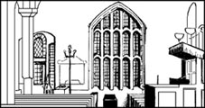
大约是在1845年，我几乎全瞎了。我请了一个新的副牧师替我工作，他就是阿瑟·尼科尔斯，一个28岁的年轻人。和我一样，他来自北爱尔兰。他人很好，工作也勤奋。我只在星期天讲道，其余的活儿都是阿瑟·尼科尔斯干。
布兰韦尔的情况越来越糟了，鲁滨逊先生在1846年去世了，可鲁滨逊太太并没有嫁给布兰韦尔——噢，没有！她是个冷血的、邪恶的女人，她把我儿子打发掉，自己后来嫁给了一个老富翁。这样布兰韦尔就花越来越多的时间喝酒和鸦片酊，或者一个人在荒野上踱步。
当人眼睛瞎后，听东西就会格外仔细。我常常一个人坐在自己的房间里，听着屋外风的声音。风儿说着、低语着、唱着——它有很多种声调。我也听着楼梯上大钟嘀哒嘀哒的响声，炉火中木柴的噼叭声以及女儿们在房子里的脚步声。她们谈论许多事，有时我还能听见她们谈话的内容，即使她们是在另一个房间。
安妮有一首诗在杂志上发表了。一天我听到了夏洛蒂和爱米丽之间的谈话，夏洛蒂读到了爱米丽写的东西，正和她谈论着。
“可它们很棒啊，爱米丽。”夏洛蒂说，“它们比我和安妮的强多了。”
“那不是写给人看的，”爱米丽说，“它们是哥恩达尔故事的一部分，除了我和安妮，没有谁能懂。”
我听出来她们在谈论爱米丽的诗。我知道爱米丽和安妮写了很多关于哥恩达尔的故事。但我了解得不多。爱米丽把她所有的诗稿都锁在自己的书桌里。
夏洛蒂和她争论道：“爱米丽，听我说！这些都是好诗，我觉得我们应该把它同我和安妮的诗一起编成一本书，试着出版。人们应该读到它们！”
“不！”爱米丽喊道。她的“管家”也跟着叫了起来，我就听不清后面的谈话了。但我想她们就这个话题又谈了好几次。我经常听到争论的声音，一般来说，她们从不会为写作而争论的。
我想劝她们不要出书。我曾出过几本自己的小书，但总是赔钱。我得付钱给出版商印书，而并没有多少人买这些书。这真是一桩太容易亏本的事。但我病得很厉害，就什么也没说。
很多年以后，我了解到她们付了三十多英镑印这本诗集，只卖了两本。她们瞒着我，我倒不觉得奇怪；家里的钱太少了。
我开始觉得我的脑子出毛病了，眼睛也不对劲。有几次邮差给我们送来一个旧包裹，上面写着“柯勒·贝尔先生收”。我告诉他霍沃思没有叫这个名字的人，然后把他打发走了。可一两个月后，他又把同一个包裹送了过来。
1846年的夏天，夏洛蒂带我去曼彻斯特看眼科大夫。我们住在镇上的房子里，大夫决定给我的眼睛做手术，第二天我们起得很早。我有点儿害怕。当医生用刀切到我的眼睛时，我的头能保持不动吗？也许会疼得很厉害。也许我会动，会站起来，或是……
夏洛蒂握着我的手，我们离开家时，碰上了一个邮差。
“早上好，小姐，”他说，“这儿有个给柯勒·贝尔的包裹。”
“哦……谢谢。”夏洛蒂听上去有些难过，但她接过包裹，把它放回自己的房间。她并没有打开它。然后我们去了眼科大夫那儿。
手术非常痛苦，好在15分钟就结束了。我坚持着没有动。之后我躺在一间黑屋子里的床上。在医院里我们待了一个月，不能回家。有个护士不时来一下，夏洛蒂则一天到晚地陪着我。
我曾问起她包裹的事。她说：“哦，那包裹是寄给我一个朋友的，爸爸。里面有一封给我的信，我现在已经把它寄走了。”
我听不太明白，但没有再问。我整天差不多都静静地躺在床上，夏洛蒂则在隔壁的屋子里写作。她写得很快，一连写好几个钟头，一次也不停笔。她看上去很安静，却又莫名其妙地有些高兴。
我也挺高兴。医生做的手术挺成功，我又能看见东西了。这真是太好了——所有东西的色彩和形状都是那么美丽。当我们回到霍沃思时，我终于能清楚地看见每一样东西了——家、教堂、墓地、荒野、我的爱米丽和安妮的脸庞！
还有布兰韦尔。
布兰韦尔的脸看上去有些吓人。他的脸又苍白又消瘦，眼睛又大又黑，头发蓬乱。他的衣服肮脏，气味难闻，双手抖个不停。他不住地叫喊、哭泣，而且每天都向我要钱。
夜里我让他睡在我的房里，他就一连几个小时地给我讲鲁滨逊太太，让我没法睡觉。我还记得他的那些画和故事，他那快活的、孩子般的笑声。我聪明的好儿子现在成了一个酒鬼。
1846年的冬天非常寒冷，风把雪花吹起来，在屋子四周和墓地上空盘旋。村子里大批的孩子死去了。安妮也生病了，布兰韦尔更糟糕。我们在每间屋子里都生起了火，可是早上窗户内层还是结了冰。我把大部分时间都花在陪布兰韦尔上，没有太注意女儿们。
后来，一天下午，夏洛蒂来到我的房间。我坐在现在的这把椅子上，就在炉火旁。她手里拿着本书，脸上带着一种奇怪的快乐表情。
“爸爸，”她说，“我一直在写本书。”
我微笑着说：“是吗，亲爱的？”我以为她又写了本关于安哥利亚的小书。
“是啊，我还想让您读读呢。”
“噢，恐怕会太伤我的眼睛的。”我的眼睛虽然好多了，但是安哥利亚故事里纤细的笔迹对我来说还是太小了些。
“哦，不！”她说，“不是我手写的，是印刷的。”她把手里的书递了过来。
“亲爱的，想想这得花多少钱！你几乎肯定要赔钱的，因为没有人会买！没有人知道你的名字！”
“我倒不这么看，爸爸，要知道我没有付印刷费。出版商付给我钱。听听，这些杂志上人们是怎么说这本书的。”
她坐下来，给我念英格兰最有名的一些杂志上的文章。那上面有几篇长长的文章，都是评论一本叫《简·爱》的书，作者是柯勒·贝尔。那些评论都很善意，大多数杂志作者都很喜欢这本书。
“那么说这个柯勒·贝尔就是你啰？”我问。
夏洛蒂大笑起来，“是呵，爸爸。这是个男人的名字，但和我的名字有同样的首字母：CB—夏洛蒂·勃朗特，柯勒·贝尔。”
她把书给我，就出去了。我开始读它。
我想我读了两个钟头，却好像只有10分钟，这是本奇妙而美丽的书——关于一个叫简·爱的女孩的故事。她父母死了，所以和一个坏舅妈及她的孩子们住在一起，后来简去了一个叫劳渥德的学校，那是个可怕的地方，非常像考恩桥的那所学校。简·爱最好的朋友海伦·彭斯在学校染上了病，死了。这个海伦就像是我的小玛丽亚。当我读到她的死时，我的双眼噙满了泪水。但这确是一本优美的书。我简直不想把它放下来。
5点钟我起身走进客厅，我的三个女儿都坐在那儿等着我。她们的眼睛都闪着亮。我的眼里还含着眼泪，可脸上带着舒心的笑容。我举起《简·爱》，说：“孩子们，你们知道夏洛蒂写了本书吗？它简直棒极了，你们知道吗——确实非常、非常好！”
8．The best days, and the worst days
8
The best days, and the worst days
Emily and Anne did know, of course. They had known about Charlotte's book for a long time. Jane Eyre was not the first book that Charlotte had sent to a publisher. Over a year ago she had written another book, The Professor, and sent it to one publisher after another. Each publisher had sent it back, in a packet addressed to Currer Bell. And then Charlotte had sent it, in the same old packet, to another publisher, and then another, and got it back again.
'Why didn't you change the paper on the packet, my dear?' I asked.
Charlotte smiled. 'I didn't think of it, papa. The worst day was when we were in Manchester, going to the eye doctor. Do you remember? The packet came back then. That was the day before I started writing Jane Eyre.'
'Do you mean that you started writing Jane Eyre while I was lying in that dark room in Manchester?'
'That's right, papa.'
'But that's only six months ago, and here is the book in my hand!'
'Yes, papa. The book was printed a month after I sent it to the publisher.'
'My dear! They decided very quickly that they liked it, then!'
'I think they did, papa. After all, it is a good book, isn't it?'
She smiled at me. I don't think I have ever seen her so happy. She is a very small person, Charlotte, and not a beautiful woman; but when she smiles like that, her face shines like a fine painting. My wife, Maria, used to look like that sometimes when I first met her.
I took her hand in mine. 'It is a very good book, my dear. I cannot tell you how proud I am.'
She touched my hand. 'Thank you, papa. But you must not be proud of me alone, you know. Anne and Emily —'
'Oh no, Charlotte, please!' Emily said.
But Charlotte did not stop. '... Anne and Emily have written books too — books just as good as mine — and their books will soon be published as well! Let me introduce you, papa. These young ladies are not your daughters — they are Acton Bell and Ellis Bell, brothers of the famous writer Currer Bell!'
Emily's face was bright red, but Anne and Charlotte started laughing. I was very surprised.
'All three of you!' I said. 'But... but why do you use these strange names?'
'Because people are stupid, papa,' Anne said. 'No one thinks women can write good books, so we have used men's names instead. And now they say that Currer Bell is a writer who understands women very well!' She laughed again.
'My dears, my dears!' I held out my hands to them, and kissed each of them in turn. 'I don't know what to say. I am so pleased for you all. You have made your old papa happy today.' Something in Emily's face stopped me. 'Emily? You will let me read your book, won't you?'
She thought for a moment. 'Yes, papa. Of course. But... it's very different from Charlotte's. I'm not sure you'll like it.'
'You yourself are very different from Charlotte, my dear, but I love you both. You must show me the book as soon as it comes — and you too, Anne.'
I read both their books that winter. They were very different. Anne's book — Agnes Grey — was the story of an unhappy governess. As I read it, I was sad to think how miserable Anne had been, in a big house away from home, where no one understood her. It was a good book, but it was harder to read than Jane Eyre.
Emily's book was called Wuthering Heights. It was a terrible, frightening, wonderful story. There is love in it, and hate, and fear, and a man called Heathcliff, who is strong and cruel like the devil himself. I read it late one night when the wind was screaming round the house, blowing snow against all the windows, and sometimes I was afraid. When I got up to go to bed, I saw Emily sitting quietly by the fire. She was stroking her big dog, Keeper, with one hand, and drawing a picture with the other.
She looked like a quiet, gentle young woman, I thought. Tall, pretty, and also... There was something different about her. Something very strange and very strong. There was something in her that was stronger than any of her sisters, even Charlotte. Something stronger than even me, or her brother Branwell.
Much stronger than Branwell.
All that year Branwell was very ill. He spent more and more time drinking. He slept most of the day, and was awake half of the night. His face was white, his hands shook when he tried to write. His sisters didn't tell him about their books, or show him the new ones that they were writing. They were afraid that he would be unhappy about their success, because he had wanted to be a writer himself. He made life hard for all of us.
In September 1848 he became very ill. He coughed all day and all night. He began to talk of death, and asked us to pray with him. While we stood together, praying, he began to cough again. He fell to the ground. Emily and I put our arms round him, but he couldn't get up. There was blood on his mouth, and on Emily's dress.
When he stopped coughing, it was because he had stopped breathing. My only son was dead.
We buried him in the church beside his mother and little sisters. It was a cold, rainy afternoon. There were dead wet leaves in the graveyard, and the wind blew rain into our faces. I came back into the house soon afterwards, but Emily walked for an hour or two in the rain with her dog, Keeper. When she came back into the house, her dress was wet through.
Several days later Emily became ill. Her face was hot, she couldn't eat, she kept moving round the house. It was difficult for her to breathe, and it took her a long time to climb the stairs. Charlotte felt her heart — it was beating a hundred and fifteen times a minute.
'Let me call a doctor, Emily,' Charlotte said.
But Emily refused. 'If he comes, I won't talk to him.'
'Then go to bed and rest, please. I can light a fire in your room, and bring you milk and read to you if you like. You need rest, sister!'
'I... do... not!' said Emily slowly. She had to breathe hard between each word, and her face was as white as Branwell's had been. 'My body... doesn't... matter now. I don't... care... about it. I'll live... as I always... have.'
And so, every day, she got up at seven o'clock, dressed herself, and stayed downstairs until ten at night. She ate little or nothing, and coughed for hours. Sometimes she coughed blood. She never went out of the house, but one day Charlotte brought some heather from the moors for her to look at. Emily was lying on the black sofa in the sitting-room. Her dog, Keeper, lay on the floor in front of her.
'Look, Emily,' Charlotte said. 'I've found some purple heather for you. There are still one or two flowers left on the moor.'
'Where?' Emily asked.
'Here. Look.' Charlotte held out the small, bright purple flower.
Emily turned and looked at Charlotte, but I don't think she could see the heather. Her eyes were too bad. Charlotte put it in Emily's hands, but after a moment Emily dropped it on the floor.
At last she said: 'Charlotte, I... will see... the doctor now. If he... comes.' Then she closed her eyes.
Emily was so thin, and her white skin looked like paper. I knew it was too late, but I said to Anne: 'Quick! Put on your coat and fetch him, now!'
We did not have long to wait. The doctor came, half an hour later, to tell us what we already knew. Emily, my daughter, was dead.
1848 was a year of funerals. I buried many children from the village that year. There was a lot of sadness in Haworth. As I came out of the church with the dead flowers from Emily's grave, I saw three other families walk past me. They had come to visit the graves of their own dead children.
The people understood that their children were with God, but no one could explain that to Emily's dog, Keeper. He followed us to her funeral, and for weeks afterwards, he lay outside her bedroom and howled.
same adj. not different. 同样的。
stupid adj. silly or foolish. 愚蠢的。
cruel adj. pleased in suffering others. 残暴的，残忍的。
devil n. spirit of evil, wicked spirit. 魔鬼，恶人。
shake v. move up and down, to and fro. 哆嗦。
heather n. （一种植物）石楠。
purple adj. colour of red and blue mixed. 紫色的。
funeral n. burial ceremony. 葬礼。
最好的和最坏的日子
8 最好的和最坏的日子
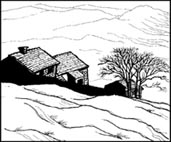
爱米丽和安妮当然知道，她们知道夏洛蒂写了这本书已经很长时间了。《简·爱》并不是夏洛蒂寄给出版商的第一部书。一年多以前她写过另一本书，名叫《教授》，寄给了一个又一个出版商。可是每次都被退了回来，包裹上写着柯勒·贝尔的名字。夏洛蒂又把包裹按原样寄给一家又一家出版商，结果还是一样。
“可你为什么不把包裹上的纸换一下呢，我亲爱的？”我问。
夏洛蒂笑了，“我没有想过这个，爸爸，最坏的一天是我们在曼彻斯特，要去看眼科医生之前，您还记得吗？就在那时包裹被退回来了，那是我开始写《简·爱》的前一天。”
“你是说就是在我躺在曼彻斯特的黑屋子里的时候，你开始写《简·爱》的？”
“对啊，爸爸。”
“可那只是六个月以前的事啊，现在这本书就已经在我手里了！”
“是的，爸爸。我把稿子寄给出版商一个月后，这本书就开始印刷了。”
“亲爱的！也就是说他们很快就决定了他们喜欢你的书！”
“我想是这样，爸爸。毕竟，这的确是一本好书，对吗？”
她朝我微笑着，我觉得还从未见过她这么快活过。夏洛蒂个子矮小，也并不美丽，但当她那样微笑时，脸上就焕发出光彩，宛如一幅精美的画。当我刚碰到我妻子玛丽亚时，她有时看上去也是这个样子。
我把她的手握在我手中。“这是一本非常好的书，亲爱的，我说不出有多自豪。”
她抚摸着我的手，“谢谢您，爸爸。可您不能只为我一个人自豪呀，您知道吗，还有安妮和爱米丽——”
“噢，不，夏洛蒂，求你了！”爱米丽说。
但是夏洛蒂并没有停下来，“……安妮和爱米丽也写了和我一样好的书——她们的书很快也要出版了！让我来介绍一下，爸爸。这些年轻的女士不是您的女儿——她们是阿克顿·贝尔和埃利斯·贝尔，著名作家柯勒·贝尔的兄弟！”
爱米丽的脸通红放光，而安妮和夏洛蒂开始放声大笑。我非常惊讶。
“你们三个都出书了！”我说，“不过……不过你们为什么用这些古怪的名字呢？”
“因为人们愚蠢，爸爸。”安妮说，“谁也不相信女人能写出好书，所以我们就用男人的名字代替。现在他们说柯勒·贝尔是一个非常了解女人的作家。”她又笑了起来。
“亲爱的，亲爱的孩子们！”我向她们伸出手，挨个亲了亲，“我简直不知道说什么好了。我真为你们高兴。你们今天可让你们的老爸爸开心了。”爱米丽脸上的表情让我停了下来，“爱米丽？你也会让我读你的书，是吗？”
她想了一会儿说：“是的，爸爸。当然。但是……它和夏洛蒂的书非常不一样。我不敢保证您会喜欢它。”
“你自己就和夏洛蒂非常不同啊，亲爱的，可你们两个我都喜欢。等你的书一出来，你一定要马上给我看——还有你，安妮。”
那年冬天我读了她们俩的书。它们大不一样。安妮的书——《艾格尼丝·格雷》——是写一个不快乐的家庭女教师。我一边读，一边难过地想：在安妮离开家，去那所大房子的日子里，她的处境曾多么悲惨；在那儿没有人理解她。这是本好书，但比《简·爱》晦涩些。
爱米丽的书叫作《呼啸山庄》，那是一个骇人而奇异的故事。它描述了爱情、仇恨、恐惧和一个叫希斯克利夫的男人，他强壮、冷酷，像一个魔鬼。有一天夜里我读它读到很晚，风在屋子周围呼啸着，把雪吹到每一扇窗户上，有几次我简直被吓坏了。当我起身去卧室时，看见爱米丽静静地坐在炉火旁，一只手抚摸着他的“管家”，另一只手在画画。
她看上去是个安静而温柔的年轻姑娘，我想，个子高挑、漂亮，而且……有些与众不同。她有一种非常奇特、非常坚强的东西。她身上有种比她任何姐妹都要坚强的东西，甚至超过了夏洛蒂，甚至超过了我和她的哥哥布兰韦尔。
她强过布兰韦尔许多许多。
那一年布兰韦尔病得非常厉害。他把越来越多的时间花在喝酒上。白天差不多整天睡觉，半夜里才醒来。他脸色苍白，手一写字就哆嗦。他的姐妹们没有和他讲过她们的书，也没有给他看过她们正在写的新书。她们害怕他会因为她们的成功而难过，因为他自己本来想当作家。他让我们大家的日子都不好过。
1848年9月，他病得更重了，整日整夜地咳嗽。他开始谈到死亡，并让我们和他一起祷告。当我们站在一起祷告时，他又咳嗽起来。他摔倒在地板上。爱米丽和我用胳膊抱住他，可他站不起来了。他嘴里流出了血，流到爱米丽的衣服上。
他不再咳嗽了，因为他已停止了呼吸。我唯一的儿子死了。
我们把他埋在教堂，挨着他妈妈和他的小姐姐们。那是个寒冷的、阴雨连绵的下午。墓地上铺满潮湿的枯叶，风把雨吹到我们脸上。后来我很快回到屋里，可爱米丽带着“管家”在雨中走了一两个小时。等她回家时，衣服全湿透了。
几天后，爱米丽病倒了。她的脸在发烧，吃不下东西，在房子周围走来走去。她呼吸困难，上楼梯要花很长时间。夏洛蒂试了试她的心跳——一分钟跳到了115次。
“我去叫医生吧，爱米丽。”夏洛蒂说。
可爱米丽拒绝了，“如果他来，我就不理他。”
“那么上床休息吧，求你了。我给你在房间生上火，再给你端杯牛奶。如果你愿意，我念书给你听。你需要休息，妹妹！”
“我……不……需要！”爱米丽慢慢地说。每说一个字她都要艰难地喘半天气，脸色像布兰韦尔的一样苍白。“我的身体……现在没有……关系。我不……在乎。我会……和往常……一样……生活。”
这样，每天她7点钟起床，穿好衣服，在楼下待到晚上10点。她吃得很少，或者干脆不吃，几个小时地咳嗽。有时咳出了血。她再也没出过门。但有一天夏洛蒂从荒野摘了些石楠来给她看。爱米丽躺在客厅的黑沙发上，她的“管家”趴在她跟前的地板上。
“看，爱米丽。”夏洛蒂说，“我给你采了些紫石楠花，野地里有一两朵还没凋谢。”
“在哪儿？”爱米丽问。
“这儿，看。”夏洛蒂递过紫色的小花。
爱米丽转过头来看着夏洛蒂，可我觉得她看不见石楠了。她的视力太糟了。夏洛蒂把花放到爱米丽手中，可过了一会儿，爱米丽把花掉到了地板上。
终于她说：“夏洛蒂，我……要看……医生了，如果他……能来的话。”说完她就闭上了眼睛。
爱米丽已经非常消瘦，皮肤看上去像纸一般苍白。我知道已经太迟了，可还是对安妮说：“快！穿上外套去叫医生，马上！”
没等多久——半小时以后医生就来了。他告诉了我们已知道的消息。爱米丽，我的女儿，她死了。
1848年是个葬礼之年，那年我主持了村里许多孩子的葬礼。霍沃思充满了悲哀的气氛。当我拿着爱米丽墓前枯萎的花从教堂里出来时，还看见另外三家人从我身旁走过，他们是来给自己死去的孩子扫墓的。
人们知道他们的孩子是和上帝在一起了，但没有人能给爱米丽的“管家”解释这个。它跟着我们参加了她的葬礼，以后好几个星期，它躺在她的卧室门外，叫着。
9．Arthur Nicholls
9
Arthur Nicholls
That was not the end of my sadness. Anne, too, became ill. She could not breathe, she coughed, her face was white. But she was more sensible than Emily. She took all her medicines, and did everything the doctors said. It didn't help much. In the spring she said she wanted to go to the sea, to a warmer place. The doctors told her to wait. I thought she would die before she went.
At last, in May, Charlotte went away with her. They went to York first, where they visited a wonderful church, York Minster. 'If men can make something as beautiful as this,' Anne whispered, 'what is God's real home like?'
Charlotte told me this in a letter she sent from Scarborough, a town by the sea on the north-east coast.
'On 26th May Anne rode a donkey on the beach,' the letter said. 'She was very happy, papa. Afterwards we went to church and then sat and watched the sea for a long time. On the 28th she was too ill to go out. She died quietly at two o'clock in the afternoon. She will be buried in a graveyard near the sea.'
Anne was the baby of the family, the youngest and prettiest of them all. Before she died, she wrote another book — The Tenant of Wildfell Hall — about a woman who left her cruel husband. She was proud of it, and so was I. She was twenty-nine years old. 'I don't want to die, papa,' she said. 'I have too many ideas in my head, too many books to write.'
When Charlotte came home the dogs barked happily. Perhaps they thought Anne and Emily and Branwell were coming home too — I don't know. But it was only Charlotte. The smallest of all my children. Not the prettiest, not the strongest, not the strangest. God had taken all those for himself. He had left me with the one who would become the most famous. And the one who nearly had a child.
Charlotte wrote two more books: Shirley, about a strong brave woman like her sister Emily; and Villette, about love between a teacher and a pupil. But Jane Eyre was her most famous book. Everyone in England talked about it; everyone wanted to read it.
Charlotte went to London and met many famous writers. I was very pleased; I loved to hear about the people and places that she saw. But she always came back to Haworth; she didn't like to be with famous people very long. And this quiet place was her home.
In 1852, just before Christmas, a terrible thing happened. I heard some of it from my room. My curate, Arthur Nicholls, opened the door to Charlotte's sitting-room, and stood there. His face was white, and he was shaking.
'Yes, Mr Nicholls?' Charlotte said. 'Do you want to come in?'
'No, Miss Charlotte — that is, yes. I mean — I have something important to say to you.'
I heard his voice stop for a moment and then he went on. 'I have always... felt strongly about you, Miss Charlotte, and... my feelings are stronger, much stronger, than you know. And, well, the fact is, Miss Charlotte, that... I am asking you to be my wife.'
There was a long silence. I heard every word, and I felt cold and angry. Mr Nicholls was a good curate, but that was all. I paid him ￡100 a year to help me with my work, but he had no place in my house, or in my daughter's bed! I stood up, and opened my door.
'Mr Nichols!'
He turned and looked at me. I could see Charlotte behind him.
'You will leave this house at once, Mr Nicholls. I am very, very angry! You must not speak to my daughter again — ever! Do you understand me?'
The stupid man was shaking and almost crying! I thought he was ill. He opened his mouth to speak, but no words came out. Then he turned and went out of the door.
Mr Nicholls stayed in his own house for three days. He refused to eat, the stupid man, and he sent me some angry letters. But Charlotte wrote to him, to say that she would not marry him. Then Mr Nicholls said he would leave Haworth, and go to Australia.
On his last day, in church, he had to give people bread to eat. But when he held out the bread to Charlotte, he could not do it, because he was shaking and crying so much. Afterwards, the people of Haworth gave him a gold watch. He cried about that, too.
I thought it was all finished, but I was wrong. I think he wrote to Charlotte, and she wrote back. In April of 1854, he came back to Haworth. Charlotte brought him into my room. I looked at him, but I said nothing. I was not pleased.
'Papa,' Charlotte said. 'Mr Nicholls and I have something to say to you.'
I did not like that. 'Mr Nicholls and I...' It did not sound good to me.
'I am busy,' I said. 'I have a lot of work.'
Charlotte smiled. 'That's because you don't have a good curate, papa. When Mr Nicholls was here, your life was easy.'
'Perhaps,' I said. 'But he was going to Australia, I thought. Why haven't you gone, sir?'
Mr Nicholls spoke for the first time. He looked very tall and proud, I thought. 'There are two reasons, sir,' he said. 'First, because I have decided not to go to Australia. And also...'
He stopped, and looked down at Charlotte. She smiled up at him, and I felt my blood run cold.
'... and also, because your daughter Charlotte and I would like to be married. We have come to ask you to agree.'
I don't remember what I said next. I think there were a lot of unkind words between us, and some tears. But in the end I agreed. I agreed because Charlotte wanted it, not because of Arthur Nicholls.
In June that year they were married in my church. I did not go — I could not give Charlotte away to that man. But he came back here to be my curate, and he and Charlotte lived in this house with me. He is still here now.
Perhaps he will read this. If he does, he will know that he was right, and I was wrong. Mr Nicholls was, after all, a good husband for Charlotte. I understood, after a while, that he honestly loved her, and he could make her happy. She began to smile and laugh again. Her eyes shone, she sang sometimes as she worked. Our house became a home again.
She went with him to see his family in Ireland, and travelled to the far west of that country. Mr Nicholls did most of my church work for me. Charlotte began a new book — Emma, she called it. And one day in December 1854 she came into my room, smiling. I could see that she was excited.
'What is it, my dear? Have you finished your book?'
'No, not yet, papa. But I have something wonderful to tell you. What do you think?'
'I don't know, my dear. If it's not your book, then...'
'I told Arthur yesterday. I am going to have a child.'
I did not say anything. Her hand was on the table and I put my hand on it gently. It was wonderful news. I remembered when my own wife, Maria, had told me this, and how this house had been full of the laughter of little voices, and the noise of running feet. Charlotte and I sat like that for a long time, remembering.
It did not happen. At Christmas she fell ill, and in the New Year she was worse. She felt sick all the time because of the baby, and she ate nothing. She lay in bed all day, hot and coughing. Arthur Nicholls cared for her wonderfully — I think he often stayed awake all night. But it did not help.
On 31st March 1855 the last of my six children died. It was early in the morning. Arthur Nicholls was sitting by her bed, and I was standing by the door. She was asleep with her hand in his. Her face was very thin and pale.
She opened her eyes and saw him. Then she coughed, and I saw fear in her face.
'Oh God,' she whispered. 'I am not going to die, am I? Please don't take me away from Arthur now — we have been so happy.'
Those were the last words she ever said. A little while later, I walked slowly out of the house. As I went into the graveyard, the church bell began to ring. It was ringing to tell Haworth and all the world that Charlotte Brontë was dead.
sadness n. 悲哀。
tenant n. person who pays rent for the use of a room, land, building, etc. 房客，承租人。
bark v. （犬）吠。
give people bread to eat 基督教的一种仪式，以面包象征耶稣的身体，众人分食面包以纪念耶稣为世人而死。
unkind adj. unfriendly. 不好的，不友好的。
shine v. reflect light. 闪耀。
It does not help. 无济于事。
whisper v. speak very quietly, using the breath but not the voice. 低语，耳语。
阿瑟·尼科尔斯
9 阿瑟·尼科尔斯
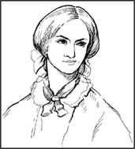
我的悲哀还没有结束。安妮也开始生病了，她呼吸吃力，咳嗽着，脸色苍白。但她比爱米丽明智，她吃了各种药，完全遵医嘱行事。可是并不怎么管用。春天来了，她说想去海边，去一个暖和些的地方，可大夫们让她等等。我预感到她可能等不到动身就会死去。
最后在5月份，夏洛蒂和她一起，先去了约克，在那儿参观了美丽的约克·敏斯特大教堂。“人类的作品已经如此美丽，”安妮叹息道，“上帝的家园又会是什么样呢？”
夏洛蒂在一封寄自斯卡伯勒的信中向我讲述了这件事，那是位于东北部海边的一个城镇。
“5月26日安妮在岸边骑了一头驴子。”信中写道，“她非常快活，爸爸。然后我们去了教堂，又坐着，看着大海，在那儿待了很长时间。28号她病得不能出门。下午两点钟她静静地死了。她将葬在海边的墓地。”
安妮是家中最小的孩子，最年轻，也最漂亮。她死前写了另一本书——《瓦尔德费尔庄园的房客》——关于一个妇女离开她残酷的丈夫的故事。她为这本书自豪，我也是。她当时29岁。“我不想死，爸爸。”她说，“我的脑子里还有许多许多构思，我还有许多许多的书要写。”
夏洛蒂回家时，狗儿们欢快地叫着。或许它们以为安妮、爱米丽和布兰韦尔也一同回来了——我不知道。可是只有夏洛蒂回来了。我所有孩子中个子最小的一个，她不是最美的，不是最坚强的，也不是最怪异的一个。上帝把其他孩子都召了回去，只留给我这一个，但她将成为最有名的一个。她差一点就有了自己的孩子。
夏洛蒂又写了另外两本书：《雪莉》是关于一个像爱米丽一样坚强勇敢的妇女的故事；《维莱特》写的是一对师生之间的爱情故事。不过《简·爱》是她最著名的作品，英格兰上下每个人都在谈论它，每个人都想读它。
夏洛蒂去了伦敦，会晤了许多有名的作家。我非常高兴；我爱听她谈论她见到的人和去过的地方。但她最后总是回到霍沃思。她不喜欢和有名的人物在一起待太长时间。只有这个安静的地方才是她的家。
1852年圣诞节前，发生了一件可怕的事。我从我的房间里听到一些声音。我的副牧师，阿瑟·尼科尔斯先生，推开了夏洛蒂起居室的门，站在那儿。他脸色苍白，浑身发抖。
“哦，尼科尔斯先生，”夏洛蒂说，“您想进来吗？”
“不，夏洛蒂小姐——我是说是的。我的意思是——我有件重要的事要跟您说。”
我听见他的声音停了一下，又继续说道：“我对您总是……有一种强烈的感情，夏洛蒂小姐，而且……我的感情越来越强烈，比您知道的要强烈得多。嗯，那么，事实是，夏洛蒂小姐，那就是……我请求您做我的妻子。”
一段长时间的沉默。我听见了每一个字，我又冷，又生气。尼科尔斯先生是个优秀的副牧师，但仅此而已。我每年付他100英镑来帮我工作，可他在我家里没有位置，更不可能和我女儿结婚！我站起身，把门推开。
“尼科尔斯先生！”
他转过身来看着我。我看见夏洛蒂站在他身后。
“你马上离开这所房子，尼科尔斯先生。我非常生气！不许你再和我女儿说话——永远！你听明白了吗？”
那个笨家伙浑身颤抖着，快要哭出来了！我觉得他是生病了。他张开嘴巴，可是一个字也说不出。然后他转身走出了房门。
尼科尔斯先生在他的房间待了三天。他绝食，这个笨家伙还写了些愤怒的信给我。但夏洛蒂也给他写了信，说她不会嫁给他。后来尼科尔斯先生说他要离开霍沃思，去澳大利亚。
最后一天，在教堂他得给人们做分面包的仪式。当他把面包递给夏洛蒂时，他简直无法进行下去了，他哆嗦着，哭得那么厉害。然后，霍沃思的人们送了他一块金表。他为这个又哭了。
我以为一切都结束了，可我错了。我猜他写信给夏洛蒂，而她也回了信。1854年4月，他又回到了霍沃思，夏洛蒂把他带进我的房间，我看着他，一言不发。我挺不高兴。
“爸爸，”夏洛蒂说，“尼科尔斯先生和我有件事要告诉您。”
我可不乐意她那么说。“尼科尔斯先生和我……”听上去不大妙。
“我没空，”我说，“我有好多事要干。”
夏洛蒂微笑了，“那是因为您没有一个称职的副牧师，爸爸。尼科尔斯先生在这儿的时候，您很轻松。”
“也许吧，”我说道，“但我记得他要去澳大利亚的呀。您怎么还没有走啊，先生？”
尼科尔斯先生第一次开口讲了话。我记得他看上去个子很高，神情骄傲。“有两个原因，先生，”他说，“首先是因为我决定不去澳大利亚了，另外……”
他停下来，低头看着夏洛蒂。她抬头笑吟吟地望着他。我觉得血液都要冷却了。
“……另外，因为您的女儿夏洛蒂和我打算结婚了。我们是来请求您的同意的。”
我记不得后来我说了什么，大概是我们两人之间说了一大堆不友好的话，都流了泪。不过最后我还是同意了。之所以这样做是为了夏洛蒂，这是她想要的；而不是因为阿瑟·尼科尔斯。
那年6月份，他们在我主持的教堂结了婚，可我没去——我不愿把夏洛蒂交给那个男人。但他仍回到这里来做我的副牧师。他、夏洛蒂和我一起住在这所房子里。他现在还在这儿。
或许他会读到这段文字。如果读了，他就会知道他是对的，而我错了。不管怎样，尼科尔斯先生是夏洛蒂的好丈夫。一段时间之后我才看出来。他真诚地爱着她，能给她带来欢乐。她又开始笑了，她的眸子闪烁着光彩，有时工作着就会唱起歌来。我们的家又像个家了。
她和他一起去了他的爱尔兰老家，一直旅行到西边很远的地方。尼科尔斯先生为我分担了教堂的绝大部分工作。夏洛蒂开始着手写一本新书——她为这本书取名为《艾玛》。1854年12月的一天，她来到了我的房间，脸上挂着微笑，看得出她很兴奋。
“怎么了，亲爱的？你写完书了？”
“不，还没呢，爸爸。但我有个好消息要告诉您。您猜是什么？”
“我猜不出，亲爱的。如果不是关于你的书，那么……”
“我昨天已经告诉了阿瑟。我怀孕了。”
我什么也没说。她的手正放在桌上，我轻轻地把手放到她的手上。这真是个好消息。我记得妻子玛丽亚也曾告诉我这样的好消息，还记得这房子里是如何地充满了稚嫩的欢笑和欢快跑动的脚步声。夏洛蒂和我就那么坐了好久，回忆着这一切。
可事情并未发生。圣诞节时她病了，到了元旦她病得更重了。由于胎儿的缘故，她总是感到恶心，什么也吃不下。她整天躺在床上，发着烧而且咳嗽。阿瑟·尼科尔斯很细心地照顾她——我想他经常整宿地不睡，但这也无济于事。
1855年3月31日，我六个孩子中的最后一个死了。那是个清晨，阿瑟·尼科尔斯坐在她的床边，我站在门旁。她的手放在他的手里睡着了。她的脸是那么消瘦、苍白。
她睁开眼睛看着他，然后又是一阵咳嗽，在她脸上我看到了恐惧的神色。
“噢，上帝，”她叹息道，“我不会死的，是吗？请别现在就把我从阿瑟身边带走——我们是多么幸福啊！”
那是她最后的话。过了一小会儿，我慢慢地走出了屋子。当我走进墓地时，教堂的钟敲响了，那是在告诉霍沃思和全世界，夏洛蒂·勃朗特去世了。
10．Maria
10
Maria
And so now I have written it. It is three o'clock in the morning. The house is very quiet and the wind has stopped. I can hear the sound of the wood burning in the fire and the clock on the stairs. Somewhere upstairs Arthur Nicholls is sleeping quietly.
I know that Charlotte's friend, Mrs Gaskell, has nearly finished her book about Charlotte. Perhaps I will show her what I have written.
Perhaps. But I don't think so. I wrote to her before, and answered her questions, and that is enough. She is a writer, she can write her own book. I will keep this book in my desk, for myself — and perhaps for Arthur Nicholls. There is no need for other people to read it. My daughter Charlotte is famous already, and when Mrs Gaskell has written about her, she will be more famous still.
I wish my wife Maria could read Charlotte's books — and Emily's, and Anne's. Perhaps she can. We had some fine children, didn't we, Maria?
I wonder if she can hear me. It is a fine night, now that the wind has stopped. There is a bright moon, and the sky is full of stars. I think I will go outside, and walk through the graveyard to the church, and talk to Maria there.
nearly adv. almost, not far from, but not quite. 几乎，近乎。
玛丽亚
10 玛丽亚
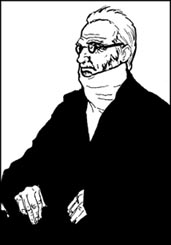
现在我写完了。凌晨3点钟，整幢房子非常寂静，风也停了。我可以听见木柴在火中燃烧的声音，还有楼梯上钟的嘀哒声。楼上，阿瑟·尼科尔斯静静地睡着。
我知道夏洛蒂的朋友盖斯凯尔夫人快写完夏洛蒂的传记了，或许我会给她看看我写下的这些东西。
也许，但也许不会。我以前给她写过信，回答了她的一些问题，那已经够了。她是个作家，会写好自己的书的。我会把这本书放在我的书桌里，只给我自己——或许还有阿瑟·尼科尔斯看。没有必要给别人看了。我女儿夏洛蒂已经成名了，而且盖斯凯尔夫人的书写好以后，她会更出名的。
我真希望我妻子玛丽亚能读读夏洛蒂的书——还有爱米丽和安妮的。或许她能看到，我们有几个多么出色的孩子，玛丽亚，是吗？
我不知道她是否能听见我的话。今夜天气很好，风现在也已停了。一轮明月当空，天上繁星点缀。我想我会出去走走，穿过墓地，到教堂去，在那儿和玛丽亚谈谈。
Exercises
Exercises
A Checking your understanding
Chapters 1-3 How much can you remember? Check your answers.
1 In the autumn of 1855, who was living in the Brontës' house?
2 When did the Brontë family move to Haworth?
3 Which of the six children went to Cowan Bridge School?
4 What was wrong with the school?
5 What happened to Maria and Elizabeth Brontë?
6 Why did the children start writing stories?
7 What were the names of the countries which they invented?
Chapters 4-6 Are these sentences true (T) or false (F)?
1 Emily was very happy at Roe Head School.
2 Branwell was a good artist.
3 The Brontë children had to find jobs because their father was poor.
4 The girls liked working as governesses, living in big fine houses.
5 Branwell never had a job.
6 A lot of parents wanted to send their children to the Brontës' school.
7 Patrick Brontë wanted Branwell to forget Mrs Robinson.
Chapters 7-8 Who said these words, and what were they talking about?
1 'They're not for people to read.'
2 'You will almost certainly lose money, because no one will buy it!'
3 'I didn't think of it, papa.'
4 'And now they say that Currer Bell is a writer who understands women very well!'
5 'You will let me read your book, won't you?'
6 'If he comes, I won't talk to him.'
Chapter 9-10 Find answers to these questions in the text.
1 How many books did Anne Brontë write?
2 Why did Charlotte become famous?
3 Why was Patrick Brontë angry when Arthur Nicholls asked Charlotte to marry him?
4 Why did Patrick change his mind about Arthur Nicholls later?
5 Who was writing a book about Charlotte Brontë?
B Working with language
1 Complete these sentences with information from the story.
1) It was a windy day in April when the Brontë family...
2) Patrick Brontë thought it was important for his children to go to school because...
3) The children began writing stories the day after...
4) Branwell went to London in 1835, but...
5) The three girls wanted to start a school because...
6) Branwell began to drink and to take laudanum after...
7) It was difficult for women to publish books so...
2 Put these sentences in the right order. Then check your order with chapters 7 and 8.
1) After a month they returned home to Haworth.
2) Branwell died in September 1848, and soon afterwards Emily became ill.
3) He read all their books and was very proud of his daughters.
4) In the summer of 1846 Charlotte took her father to Manchester.
5) She refused to see a doctor and died some weeks later.
6) There, a doctor operated on Patrick Brontë's eyes.
7) But he was not proud of his son, Branwell, who spent most of his time drinking.
8) While her father was recovering, Charlotte began to write Jane Eyre.
9) That winter Patrick learnt that all three girls had published a book.
C Activities
1 What do you think happened to Branwell Brontë during his two weeks in London? Imagine that you met Branwell several times, and write a letter to Charlotte, telling her what happened to her brother.
2 Imagine you are a newspaper reporter, who comes to Haworth in 1847 to interview Currer, Ellis, and Acton Bell. Describe what happened when you arrived at the Brontës' home, and write down your conversations with the three sisters.
3 Find out about the life story of a famous writer from your own country. Tell the story of this writer's life in English.
封底
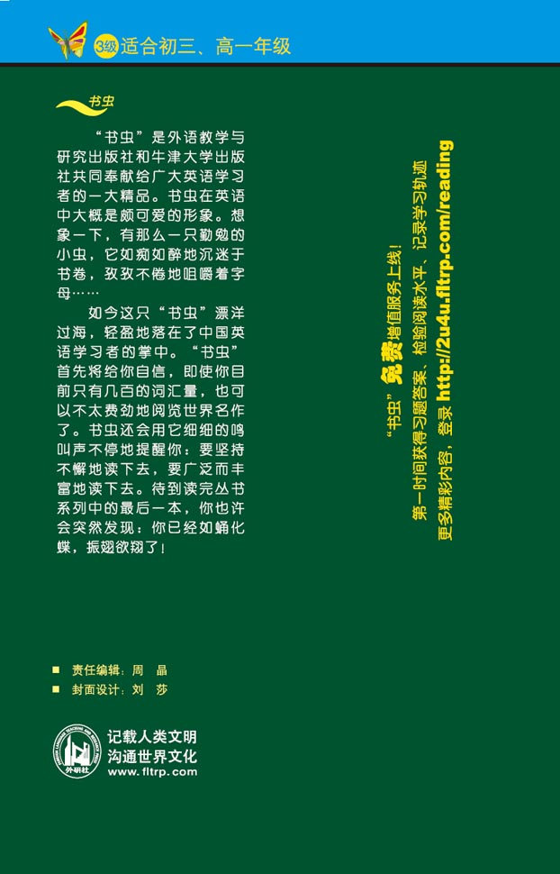